Capítulo 1 Modelo lineal simple
Datos de peso al nacer
Los datos birthweight (del paquete isdals de R) pertenecen a un estudio desarrollado para investigar cómo el sexo del bebé y la edad gestacional influyen en el peso al nacer.
En la Figura 1.1 se observa la relación entre el peso al nacer y la edad gestacional. Se puede observar que hay relación positiva entre las dos variables. Los recién nacidos en semanas de gestación mayores tienen pesos más grandes. Sin embargo, no se observa una diferencia muy marcada entre el peso al nacer entre niños y niñas.
library(isdals)
data(birthweight)
plot(weight~age,data=birthweight,xlab="edad gestacional (meses)",
ylab='peso al nacer (gramos)',col=sex)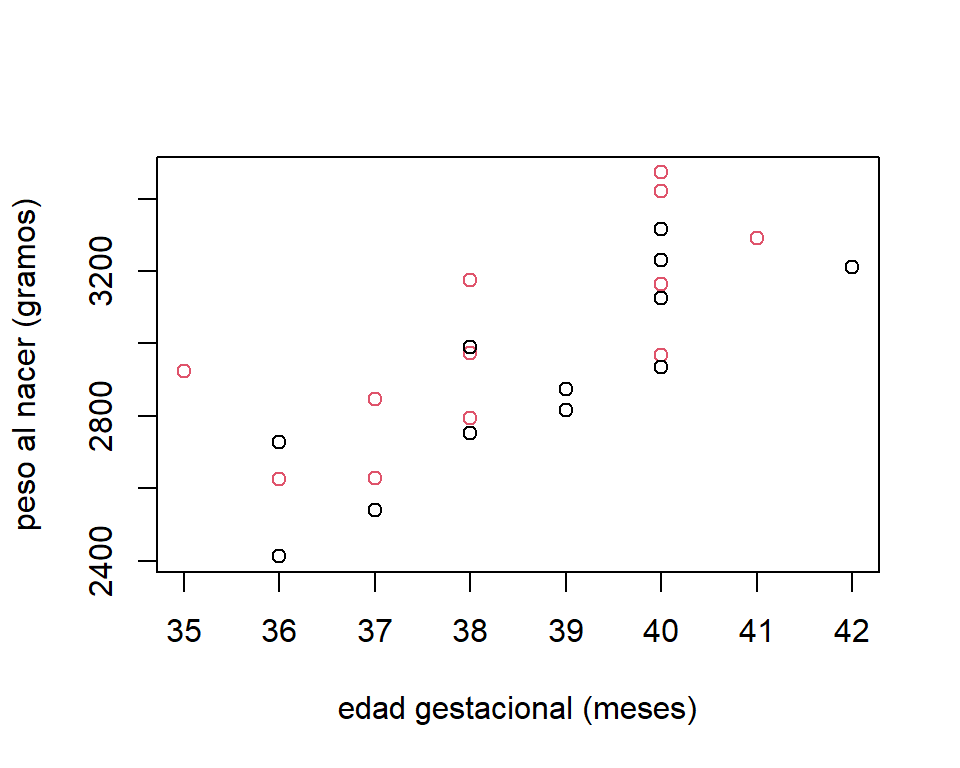
Figure 1.1: Gráfico de dispersion del la edad gestional y el peso al nacer. Punto rojos corresponden a niños y los negros a niñas.
Finalmente, se observa que la relación parece ser lineal. Por lo que sería razonable describir el valor esperado del peso al nacer como una función lineal de la semana gestacional y el sexo del recién nacido: \[ E(\mbox{weigth}|\mbox{age}=x,\mbox{sex}=z) = \beta_{0} + \beta_{1}x + \beta_{2}z + \beta_{3}x \times z, \] donde \(z=1\) si el recién nacido es niño, \(z=0\) si el recién nacido es niña.
Con esta función de media se tiene dos rectas diferentes que determinan el peso medio de los recién nacidos niños y niñas. \(\beta_2\) indica la diferencia de intercepto entre las dos categorías y \(\beta_3\) la diferencia entre pendientes. En la Figura 1.2(izquierda) se observan las dos rectas que se obtienen a partir de una función de este tipo. Si se elimina la interacción entre variables (es decir, \(\beta_3=0\)), se obtienen dos rectas paralelas (Figura 1.2, derecha).
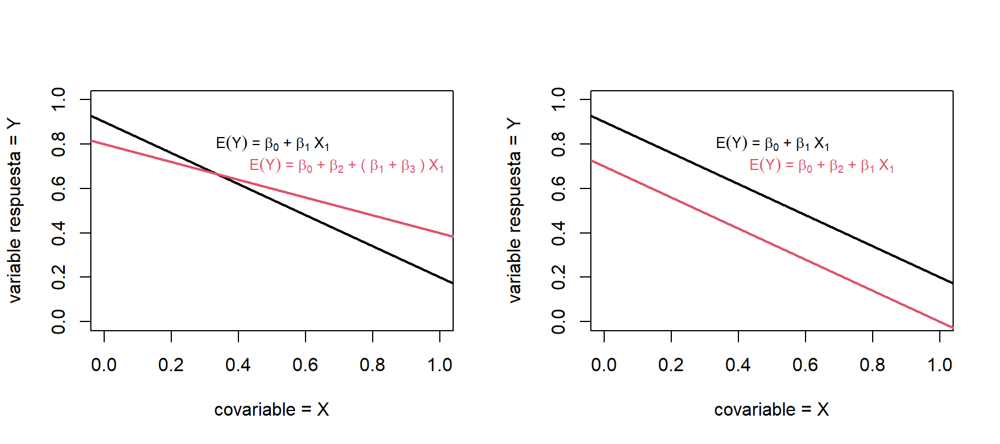
Figure 1.2: Efecto de la interacción entre variable continua e indicadora. Modelo general (izquierda) y modelo de líneas paralelas (derecha).
De aquí podríamos preguntarnos, ¿hay diferencias entre el peso al nacer entre niños y niñas? ¿esta diferencia cambia dependiendo de la edad en que nacen?.
Datos de grasa corporal
Un indicador de salud es el % de grasa corporal. Sin embargo, es una medida que es díficil de calcular de forma precisa. Hay varios métodos para ello, uno de estos requiere de pesaje bajo el agua (hidrodensitometría). Por lo que se quiere ajustar un modelo predictivo que dependa de mediciones que sean más fáciles de calcular, como son medidas antropométricas de diferentes partes del cuerpo.
La base de datos fat de la librería faraway contiene la edad, el peso, la estatura y 10 mediciones de circunferencias del cuerpo de 252 hombres. Además de estas medidas, se tiene el % de grasa coporal de estos hombres medido de forma precisa utilizando técnicas de pesaje bajo el agua.
La Figura 1.3 muestra la relación entre el % de grasa corporal y la circunferencia del abdomen (en cm). El % de grasa corporal es calculado a partir de la formula de Brozek.
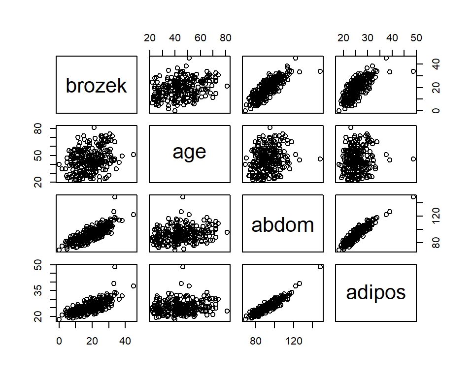
Figure 1.3: Gráfico de dispersion del % de grasa corporal (brozek), la edad (age), la circunferencia del abdomen (abdom) y el índice de masa corporal (adipos).
Por medio de este gráfico vemos que los hombres con mayor circumferencia del abdomen e índice de masa corporal presentan mayor grasa corporal. Mientras que la relación con respecto a la edad es también positiva, sin embargo no es fuerte.
Dado que estas relaciones son aproximandamente lineales, sería razonable describir el valor esperado del % de grasa corporal como una función lineal de estas tres medidas: \[ E(\mbox{grasa}|\mbox{abdom}=x_1, \mbox{age}=x_2, \mbox{adipos}=x_3) = \beta_{0} + \beta_{1}x_1+\beta_{2}x_2+\beta_{3}x_3. \]
Con este conjunto de datos podemos plantear las siguientes preguntas: ¿los efectos de estas tres medidas sobre el % de grasa corporal se pueden considerar significativos?¿que tal son las predicciones del % de grasa corporal por medio de estas tres medidas?
Datos de las Naciones Unidas
La base de datos UN11 de la librería alr4 contiene las siguientes estadísticas de varios miembros de las naciones unidas (y otras regiones independientes) durante los años 2009-2011:
- fertility: Número esperado de nacidos vivos por mujer.
- ppgdp: producto nacional bruto per cápita (PNB, en dólares).
- Purban: el porcentaje de la población que vive en un área urbana.
- group: una variable que categoriza el país en tres grupos: miembro de la OECD, áfrica y otros.
El objetivo del estudio es ver la relación entre la fertilidad con las otras variables. La Figura 1.4 muestra la relación entre las variables. Aquí vemos que ambas covariables tienen una relación negativa con la fertilidad. Sin embargo, la relación con el producto nacional bruto no es lineal. Esto podría traer problemas a la hora de ajustar un modelo lineal, pero puede corregirse realizando transformaciones para linealizar las relaciones.
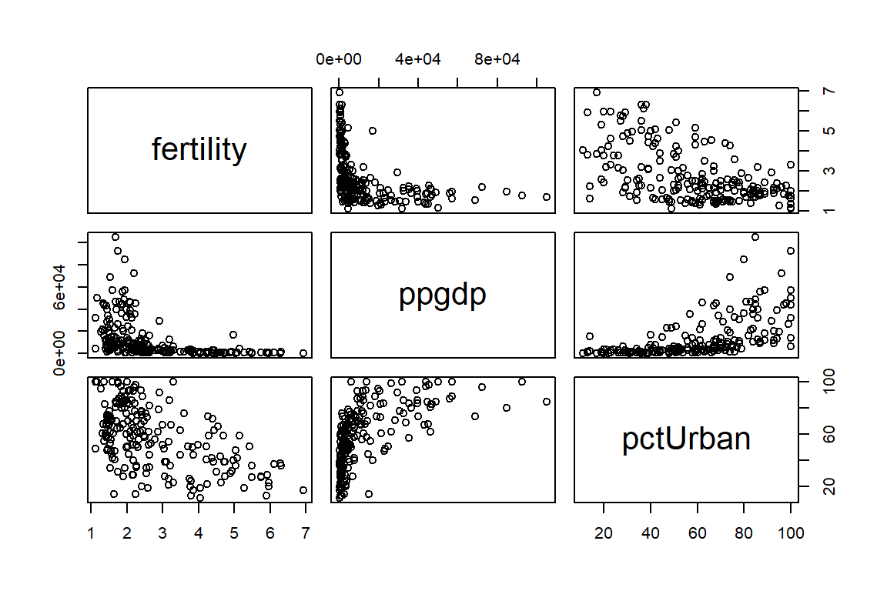
Figure 1.4: Datos de la ONU. Relación entre las variables.
Aquí también podemos evaluar la relación que tienen el PNB y el porcentaje de la población urbana sobre la tasa de fertilidad a través de un modelo lineal.
Datos de cemento
Los datos data(cement), de la librería MASS, corresponden a un experimento para evaluar el efecto de diferentes combinaciones químicas sobre el calor emanado en el fraguado del cemento Portland. Para esto, se tiene una muestra de \(13\) fraguados de cemento. En cada muestra, se midió con precisión los porcentajes de los cuatro ingredientes químicos principales (covariables). Mientras el cemento fraguaba, también se midió la cantidad de calor desprendido (cals/gm, variable respuesta). Esta una variable de utilidad para determinar la calidad del cemento. Los cuatro ingredientes químicos son: x1 aluminato tricálcico (%), x2 silicato tricálcico (%), x3 tetra-aluminio ferrita de calcio (%), y x4 silicato dicálcico (%).
En la Figura 1.5 podemos observar que hay relaciones lineales positivas entre la variable respuesta y las covariables aluminato tricálcico y silicato tricálcico. Mientras que la relación con la variable silicato dicálcico es negativa. También podemos notar que hay una relación negativa fuerte en las covariables aluminato tricálcico y tetra-aluminio ferrita de calcio, y entre silicato tricálcico y silicato dicálcico.
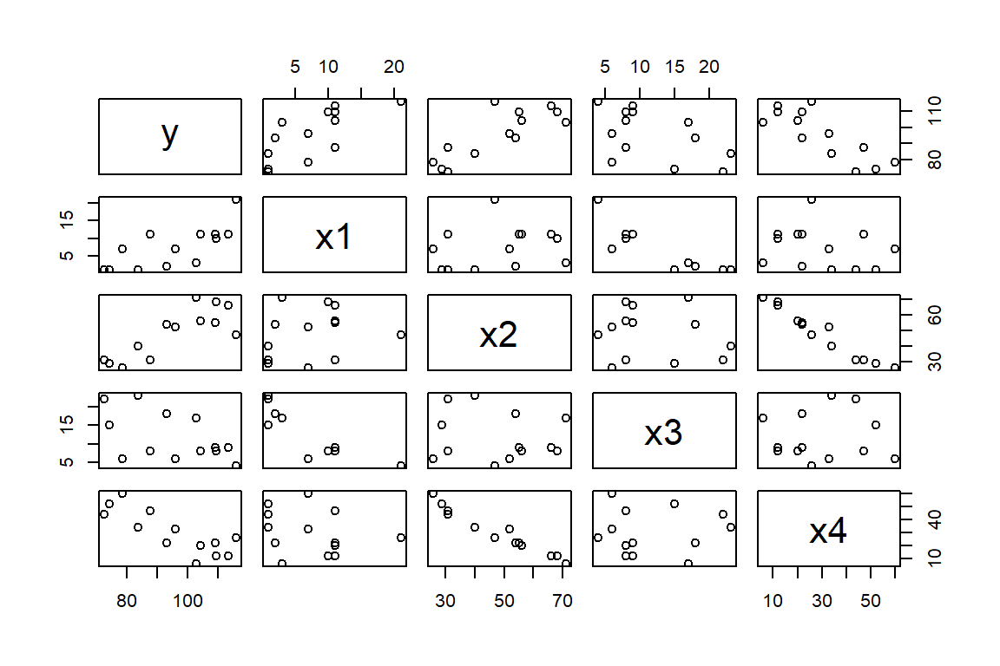
Figure 1.5: Datos de cemento. Diagrama de dispersión de las variables.
A través del ajuste de un modelo lineal se puede determinar el efecto de cada uno de estos ingredientes químicos sobre la cantidad de calor que se emite durante el fraguado.
1.1 Definición del modelo
Asumamos que para el \(i\)-esimo individuo, tenemos una variable respuesta \((y_i)\) y un conjunto de \(p-1\) covariables observadas, \(\boldsymbol x_i = (1,x_{i1},x_{i2},\ldots,x_{i,p-1})'\). El modelo lineal, se puede expresar de la siguiente forma: \[ y_i = \boldsymbol x_i'\boldsymbol \beta+ \varepsilon_i, \] donde \(\boldsymbol \beta=(\beta_0,\beta_1,\ldots,\beta_{p-1})'\) es el vector de coeficientes de regresión y \(\varepsilon_i\) es un error aleatorio. Sobre el úlitmo componente se asume que \(\varepsilon_i \sim N(0,\sigma^2)\) y \(cov(\varepsilon_i,\varepsilon_j) = 0\) para todo \(i\neq j\). Estos supuestos implican que \(y_i \sim N(\mu_i=\boldsymbol x_i\boldsymbol \beta,\sigma^2)\) y \(cov(y_i,y_j) = 0\), para todo \(i \neq j\).
De forma matricial, el modelo se puede expresar como: \[ \boldsymbol y= \boldsymbol X\boldsymbol \beta+ \boldsymbol \varepsilon, \] donde: \[\begin{gather} \begin{aligned} \boldsymbol y= \begin{pmatrix} y_{1} \\ y_{2} \\ \vdots \\ y_{n} \end{pmatrix}, & \boldsymbol X= \begin{pmatrix} 1 & x_{11} & x_{12} & \ldots & x_{1,p-1} \\ 1 & x_{21} & x_{22} & \ldots & x_{2,p-1} \\ \vdots & \vdots & \vdots & \ddots & \vdots \\ 1 & x_{n1} & x_{n2} & \ldots & x_{n,p-1} \end{pmatrix}, \boldsymbol \beta= \begin{pmatrix} \beta_{0} \\ \beta_{1} \\ \beta_{2} \\ \vdots \\ \beta_{p-1} \end{pmatrix}, & \boldsymbol \varepsilon= \begin{pmatrix} \varepsilon_{1} \\ \varepsilon_{2} \\ \vdots \\ \varepsilon_{n} \end{pmatrix}. \end{aligned} \nonumber \end{gather}\] Además, los supuestos sobre los errores se pueden expresar como \(\boldsymbol \varepsilon\sim N(\boldsymbol 0, \sigma^{2}\boldsymbol I)\), donde \(\boldsymbol 0\) es un vector con todas las entradas iguales a cero, y \(\boldsymbol I\) es la matriz identidad. Lo que implica que \(\boldsymbol y\sim N(\boldsymbol X\boldsymbol \beta, \sigma^2\boldsymbol I)\).
1.1.1 Inclusión de covariables categóricas
En el ejemplo del peso al nacer tenemos un covariable que es categórica (sexo). Para representar matemáticamente esta covariable en el modelo, se le asignó un valor de \(x_2=1\) a uno de los sexos y \(x_2=0\) al otro.
Las covariables categóricas se incluyen en un modelo como variables indicadoras (o también llamadas dummies). En el caso que la covariable \((Z)\) tenga dos categorías, entonces se crea una variable indicadora. En el ejemplo de peso al nacer, la covariable sexo requiere la creación de una variable indicadora: \[ z_{i} = \begin{cases} 1 & \mbox{ si la observación $i$ corresponde a un niño}, \\ 0 & \mbox{ si la observación $i$ corresponde a una niña}. \\ \end{cases} \] Aquí la categoría niña \((z_i=0)\) es llamada la categoría de referencia.
En genenral, si la covariable tiene \(k\) categorías, se tiene que crear \(k-1\) variables indicadoras. Para el ejemplo de los datos de la ONU, la variable grupo tiene tres categorías, así que se tendrían que crear dos variables indicadoras: \[ z_{1i} = \begin{cases} 1 & \mbox{ si el $i$-esimo país pertenece a la OECD}, \\ 0 & \mbox{ si lo contrario}. \\ \end{cases} \] y \[ z_{2i} = \begin{cases} 1 & \mbox{ si el $i$-esimo país pertenece a África}, \\ 0 & \mbox{ si lo contrario}. \\ \end{cases} \] En este caso, la categoría otro sería la referencia.
Supongamos que tenemos el siguiente modelo: \[\begin{equation} \begin{split} \log\mbox{fertility}_{i} =& \beta_{0} + \mbox{z}_{1i}\beta_{1}+\mbox{z}_{2i}\beta_{2} + \log\mbox{ppgdp}_{i}\beta_{3} + \\ & \mbox{z}_{1i}\log\mbox{ppgdp}_{i}\beta_{4} + \mbox{z}_{2i}\log\mbox{ppgdp}_{i}\beta_{5} + \varepsilon_{i}, \end{split} \nonumber \end{equation}\] donde \(\varepsilon_{i} \sim N(0,\sigma^{2})\) y \(cov(\varepsilon_{i},\varepsilon_{j})=0\) para todo \(i \neq j\). Este modelo propone tres rectas que describen el valor esperado de la fertilidad en función del PNB per cápita, una para cada categoría de país. Para los países de la categoría otro, tenemos que: \[ E(\mbox{fertility}|\mbox{ppgdp},z_1=0,z_2=0 ) = \beta_0 + \beta_3 \mbox{ppgdp}. \] Mientras que, para los países de la OECD: \[ E(\mbox{fertility}|\mbox{ppgdp},z_1=1,z_2=0 ) = (\beta_0+\beta_1) + (\beta_3+\beta_4) \mbox{ppgdp}. \] Finalmente, para los países africanos tenemos que: \[ E(\mbox{fertility}|\mbox{ppgdp},z_1=0,z_2=1 ) = (\beta_0+\beta_2) + (\beta_3+\beta_5) \mbox{ppgdp}. \] Hay que tener en cuenta que la asignación de la categoría de referencia no afecta en nada al ajuste del modelo. Sin embargo, la interpretación de los coeficientes cambia.
1.2 Estimación de los parámetros por mínimos cuadrados ordinarios
La estimación de \(\boldsymbol \beta\) se hace a través del método de mínimos cuadrados ordinarios (MCO). Por lo tanto, debemos encontrar el vector \(\widehat{\boldsymbol \beta}\) que minimice: \[ S(\boldsymbol \beta) = \sum_{i=1}^{n}\left(y_{i} - \boldsymbol x_{i}'\boldsymbol \beta\right)^2 = \sum_{i=1}^{n}e_{i}^2. \] En forma matricial, tenemos:
\[\begin{equation} \begin{split} S(\boldsymbol \beta) &= \boldsymbol e'\boldsymbol e= (\boldsymbol y- \boldsymbol X\boldsymbol \beta)'(\boldsymbol y- \boldsymbol X\boldsymbol \beta) \\ &= \boldsymbol y'\boldsymbol y- \boldsymbol \beta'\boldsymbol X'\boldsymbol y- \boldsymbol y'\boldsymbol X\boldsymbol \beta+ \boldsymbol \beta'\boldsymbol X'\boldsymbol X\boldsymbol \beta\\ &= \boldsymbol y'\boldsymbol y- 2\boldsymbol \beta'\boldsymbol X'\boldsymbol y+ \boldsymbol \beta'\boldsymbol X'\boldsymbol X\boldsymbol \beta. \end{split} \nonumber \end{equation}\] Por lo tanto, \(\widehat{\boldsymbol \beta}\) debe satisfacer: \[ \left. \frac{\partial S}{\partial \boldsymbol \beta} \right|_{\widehat{\boldsymbol \beta}} = - 2\boldsymbol X'\boldsymbol y+ 2\boldsymbol X'\boldsymbol X\widehat{\boldsymbol \beta}= \boldsymbol 0. \] A partir de aquí obtenemos las ecuaciones normales: \[ \boldsymbol X'\boldsymbol X\widehat{\boldsymbol \beta}= \boldsymbol X'\boldsymbol y. \] En más detalle:
\[\begin{gather} \begin{pmatrix} n & \sum x_{i1} & \sum_{i=1}^{n}x_{i2} & \ldots & \sum_{i=1}^{n}x_{i,p-1} \\ \sum x_{i1} & \sum x_{i1}^2 & \sum x_{i1}x_{i2} & \ldots & \sum x_{i1}x_{i,p-1} \\ \sum x_{i2} & \sum x_{i1}x_{i2} & \sum x_{i2}^2 & \ldots & \sum x_{i2}x_{i,p-1} \\ \vdots & \vdots & \vdots & \ddots & \vdots \\ \sum x_{i,p-1} & \sum x_{i1}x_{i,p-1} & \sum x_{i2}x_{i,p-1} & \ldots & \sum x_{i,p-1}^{2} \\ \end{pmatrix} \begin{pmatrix} \widehat{\beta}_{0} \\ \widehat{\beta}_{1} \\ \vdots \\ \widehat{\beta}_{p-1} \end{pmatrix} = \begin{pmatrix} \sum y_{i} \\ \sum x_{i1}y_{i} \\ \vdots \\ \sum x_{i,p-1}y_{i} \end{pmatrix} \nonumber \end{gather}\]
Al resolver la ecuación para \(\widehat{\boldsymbol \beta}\) se obtiene el estimador por MCO: \[ \widehat{\boldsymbol \beta}= (\boldsymbol X'\boldsymbol X)^{-1}\boldsymbol X'\boldsymbol y. \] Note que es necesario que \(\boldsymbol X\) sea de rango completo, \(\mbox{rango}(\boldsymbol X) = p \leq n\). Esta restricción es necesaria para asegurar que \(\boldsymbol X'\boldsymbol X\) sea no singular.
La estimación de \(E(y|\boldsymbol x_i)\) recibe el nombre de valor ajustado de \(y_i\) para el vector de covariables \(\boldsymbol x_{i}\), definido como \(\widehat{y}_{i}= \boldsymbol x_{i}'\widehat{\boldsymbol \beta}\).
Definiendo \(\widehat{\boldsymbol y}= (\widehat{y}_{1},\widehat{y}_{2},\ldots,\widehat{y}_{n})'\), tenemos que: \[ \widehat{\boldsymbol y}= \boldsymbol X\widehat{\boldsymbol \beta}= \boldsymbol X(\boldsymbol X'\boldsymbol X)^{-1}\boldsymbol X'\boldsymbol y= \boldsymbol H\boldsymbol y. \] La matriz \(\boldsymbol H= \boldsymbol X(\boldsymbol X'\boldsymbol X)^{-1}\boldsymbol X'\) es llamada matriz hat (sombrero) y desempeña un papel importante en el análisis de regresión. Esta matriz es simétrica e idempotente (\(\boldsymbol H\boldsymbol H= \boldsymbol H\)) y es de rango \((n-p)\). Además, se tiene que \(\boldsymbol H\boldsymbol X= \boldsymbol X\).
La diferencia entre el valor observado \((y_i)\) y el valor ajustado \((\widehat{y}_i)\) en el punto \(\boldsymbol x_i\) recibe el nombre de residuo del modelo \((e_{i}=y_{i}-\widehat{y}_{i})\). Este también se pueden expresar en forma matricial: \[ \boldsymbol e= \boldsymbol y- \boldsymbol X'\widehat{\boldsymbol \beta}= \boldsymbol y- \boldsymbol X(\boldsymbol X'\boldsymbol X)^{-1}\boldsymbol X'\boldsymbol y= \boldsymbol y- \boldsymbol H\boldsymbol y= (\boldsymbol I_{n} - \boldsymbol H)\boldsymbol y. \] A partir de los residuos se puede obtener la estimación de \(\sigma^2\). Este se obtiene a través de la suma de cuadrados de los residuos, definida como: \[\begin{equation} \begin{split} SSE &= \sum_{i=1}^{n}e^{2}_{i} = \boldsymbol e'\boldsymbol e= (\boldsymbol y- \boldsymbol X\widehat{\boldsymbol \beta})'(\boldsymbol y- \boldsymbol X\widehat{\boldsymbol \beta}) \\ &= (\boldsymbol y- \boldsymbol H\boldsymbol y)'(\boldsymbol y- \boldsymbol H\boldsymbol y) = \boldsymbol y'(\boldsymbol I_{n}-\boldsymbol H)'(\boldsymbol I_{n}-\boldsymbol H)\boldsymbol y= \boldsymbol y'(\boldsymbol I_{n} - \boldsymbol H)\boldsymbol y. \end{split} \nonumber \end{equation}\]
El valor esperado de esta cantidad es: \[ E(SSE) = E\left[\boldsymbol y'(\boldsymbol I_{n} - \boldsymbol H)\boldsymbol y\right] = \sigma^{2}\mbox{tr}\left( \boldsymbol I_{n} - \boldsymbol H\right) + \boldsymbol \beta'\boldsymbol X'(\boldsymbol I_{n} - \boldsymbol H)\boldsymbol X\boldsymbol \beta= (n-p)\sigma^{2}. \] Por lo tanto, un estimador insesgado de \(\sigma^2\) es: \[ \widehat{\sigma}^2 = MSE = \frac{SSE}{n-p}, \] y toma el nombre del cuadrado medio de los residuos (\(MSE\)).
1.2.1 Propiedades de los estimadores por MCO
Si \(E(\boldsymbol \varepsilon)= \boldsymbol 0\), el valor esperado de \(\widehat{\boldsymbol \beta}\) es: \[\begin{equation} \begin{split} E(\widehat{\boldsymbol \beta}) =& E\left[ (\boldsymbol X'\boldsymbol X)^{-1}\boldsymbol X'\boldsymbol y\right] = E\left[ \boldsymbol X'\boldsymbol X)^{-1}\boldsymbol X'(\boldsymbol X\boldsymbol \beta+ \boldsymbol \varepsilon) \right] \\ =& E\left[ (\boldsymbol X'\boldsymbol X)^{-1}\boldsymbol X'\boldsymbol X\boldsymbol \beta+ (\boldsymbol X'\boldsymbol X)^{-1}\boldsymbol X'\boldsymbol \varepsilon\right] = \boldsymbol \beta. \end{split} \nonumber \end{equation}\] Por lo tanto, \(\widehat{\boldsymbol \beta}\) es un estimador insesgado de \(\boldsymbol \beta\).
Si \(V(\boldsymbol \varepsilon)= \sigma^2\boldsymbol I\), la matriz de varianzas-covarianzas de \(\widehat{\boldsymbol \beta}\) está dada por: \[\begin{equation} \begin{split} V(\widehat{\boldsymbol \beta}) &= V\left[ (\boldsymbol X'\boldsymbol X)^{-1}\boldsymbol X'\boldsymbol y\right] = (\boldsymbol X'\boldsymbol X)^{-1}\boldsymbol X'V(\boldsymbol y)\boldsymbol X(\boldsymbol X'\boldsymbol X)^{-1} \\ &= \sigma^{2}(\boldsymbol X'\boldsymbol X)^{-1}\boldsymbol X'\boldsymbol X(\boldsymbol X'\boldsymbol X)^{-1} = \sigma^{2}(\boldsymbol X'\boldsymbol X)^{-1}. \end{split} \nonumber \end{equation}\] Si \(\boldsymbol C=(\boldsymbol X'\boldsymbol X)^{-1}\), entonces \(V(\widehat{\beta}_{j}) = \sigma^{2}c_{jj}\) y \(Cov(\widehat{\beta}_{j},\widehat{\beta}_{k})=\sigma^{2}c_{jk}\), donde \(c_{jk}\) es la entrada \((j,k)\) de la matriz \(\boldsymbol C\).
1.2.2 Teorema de Gauss-Markov
Si, \(E(\boldsymbol \varepsilon) = \boldsymbol 0\) y \(V(\boldsymbol \varepsilon) = \sigma^{2}\boldsymbol I_{n}\), el estimador por MCO es el mejor estimador lineal insesgado de \(\boldsymbol \beta\). Esto quiere decir que es el estimador con menor varianza entre la clase de estimador insesgados que son combinaciones lineales de \(y\).
Para demostrarlo, consideremos otro estimador lineal de \(\boldsymbol \beta\): \[ \tilde{\boldsymbol \beta}= [ (\boldsymbol X'\boldsymbol X)^{-1}\boldsymbol X' + \boldsymbol D]\boldsymbol y+ \boldsymbol a, \] para una matriz \(\boldsymbol D\neq \boldsymbol 0\) de dimensión \(p\times n\) y un vector \(\boldsymbol a\) de dimensión \(p\). El valor esperado de \(\tilde{\boldsymbol \beta}\) es: \[ E(\tilde{\boldsymbol \beta}) = [ (\boldsymbol X'\boldsymbol X)^{-1}\boldsymbol X' + \boldsymbol D]E(\boldsymbol y) + \boldsymbol a=[ (\boldsymbol X'\boldsymbol X)^{-1}\boldsymbol X' + \boldsymbol D]\boldsymbol X\boldsymbol \beta= (\boldsymbol I+ \boldsymbol D\boldsymbol X)\boldsymbol \beta+ \boldsymbol a. \] Dado que consideramos estimadores insesgados, se tiene que cumplir que \(\boldsymbol D\boldsymbol X= \boldsymbol 0\) y \(\boldsymbol a= \boldsymbol 0\).
La varianza de \(\tilde{\boldsymbol \beta}\) es: \[ V(\tilde{\boldsymbol \beta}) = \sigma^{2}\left[ (\boldsymbol X'\boldsymbol X)^{-1} + \boldsymbol D\boldsymbol D'\right]. \] Debemos demostrar que: \[ V(\boldsymbol l'\tilde{\boldsymbol \beta}) \geq V(\boldsymbol l'\widehat{\boldsymbol \beta}), \] para cualquier \(\boldsymbol l\neq \boldsymbol 0\). Tenemos que: \[ V(\boldsymbol l'\tilde{\boldsymbol \beta}) = V(\boldsymbol l'\widehat{\boldsymbol \beta}) + \sigma^{2}\boldsymbol l'\boldsymbol D\boldsymbol D'\boldsymbol l. \] Si consideramos \(\boldsymbol a= \boldsymbol D'\boldsymbol l\), entonces \(\boldsymbol a'\boldsymbol a= \sum_{i=1}^{p}a^{2}_i > 0\). Por lo tanto: \[ \sigma^{2}\boldsymbol a'\boldsymbol a> 0, \] y en consecuencia, \(V(\boldsymbol l'\tilde{\boldsymbol \beta}) > V(\boldsymbol l'\widehat{\boldsymbol \beta})\).
1.2.3 Estimador de máxima verosimilitud
Dado que estamos asumiendo que \(\boldsymbol \varepsilon\sim N(\boldsymbol 0, \sigma^{2}\boldsymbol I_{n})\), entonces \(\boldsymbol y\sim N(\boldsymbol X\boldsymbol \beta,\sigma^2\boldsymbol I)\). Por lo tanto la función de log-verosimitud para \(\boldsymbol \theta= (\boldsymbol \beta',\sigma^2)'\) está dada por: \[ \ell(\boldsymbol \theta) = -\frac{n}{2} \left[ \log(2\pi) - \log \sigma^2 \right] - \frac{1}{2\sigma^2}(\boldsymbol y- \boldsymbol X\boldsymbol \beta)'(\boldsymbol y- \boldsymbol X\boldsymbol \beta). \] Al derivar con respecto a \(\boldsymbol \beta\) y \(\sigma^2\) e igual a cero, encontramos las funciones score: Funciones score: \[ \boldsymbol u(\boldsymbol \beta) = \frac{\partial \ell(\boldsymbol \theta)}{\partial \boldsymbol \beta} = - \frac{1}{\sigma^{2}}(\boldsymbol X'\boldsymbol y- \boldsymbol X'\boldsymbol X\boldsymbol \beta) = \boldsymbol 0, \] y \[ u(\sigma^{2}) = \frac{\partial \ell(\boldsymbol \theta)}{\partial \sigma^{2}} = - \frac{n}{2\sigma^{2}} + \frac{1}{2\sigma^{4}}(\boldsymbol y- \boldsymbol X\boldsymbol \beta)'(\boldsymbol y- \boldsymbol X\boldsymbol \beta) = 0, \] Resolviendo las ecuaciones para \(\boldsymbol \beta\) y \(\sigma^{2}\) encontramos el estimador por máxima verosimlitud (MLE): \[ \widehat{\boldsymbol \beta}= (\boldsymbol X'\boldsymbol X)^{-1}\boldsymbol X'\boldsymbol y, \] y \[ \widehat{\sigma}^{2} = \frac{(\boldsymbol y- \boldsymbol X\widehat{\boldsymbol \beta})'(\boldsymbol y- \boldsymbol X\widehat{\boldsymbol \beta})}{n}. \] A partir de las segundas derivadas encontramos la matriz Hessiana: \[ \boldsymbol H(\boldsymbol \theta) = - \frac{1}{\sigma^{2}}\begin{pmatrix} \boldsymbol X'\boldsymbol X& -\frac{\boldsymbol X'(\boldsymbol y- \boldsymbol X\boldsymbol \beta)}{\sigma^{2}} \\ & -\frac{n}{2\sigma^{2}} + \frac{1}{\sigma^{4}}\boldsymbol \varepsilon'\boldsymbol \varepsilon \end{pmatrix}, \] donde \(\boldsymbol \varepsilon= (\boldsymbol y- \boldsymbol X\boldsymbol \beta)\), y la matriz de información: \[ \boldsymbol I(\boldsymbol \theta) = - E[\boldsymbol H(\boldsymbol \theta)] = \frac{1}{\sigma^{2}} \begin{pmatrix} \boldsymbol X'\boldsymbol X& \boldsymbol 0\\ & \frac{n}{2\sigma^{2}} \end{pmatrix} . \] Por lo tanto, la matriz de varianzas de \(\widehat{\boldsymbol \theta}\) es: \[ V(\widehat{\boldsymbol \theta}) = \boldsymbol I(\boldsymbol \theta)^{-1} = \sigma^{2} \begin{pmatrix} (\boldsymbol X'\boldsymbol X)^{-1} & \boldsymbol 0\\ & \frac{2\sigma^{2}}{n} \end{pmatrix}. \] Aquí podemos ver que si asumimos normalidad sobre los errores, obtenemos el mismo estimador para \(\boldsymbol \beta\) que por MCO. Además, el MLE para \(\sigma^2\) es sesgado.
1.2.4 Interpretación de parámetros e implementación en R
El valor esperado de \(Y\) es: \[\begin{equation} E(Y| \boldsymbol x_{i}) = \beta_{0} + \beta_{1}x_{i1} + \beta_{2}x_{i2} + \ldots + \beta_{p-1} x_{i,p-1} = \boldsymbol x_{i}'\boldsymbol \beta. \tag{1.1} \end{equation}\] Por lo que \(\beta_{0}\) es el valor esperado de \(Y\) cuando \(x_{i}=(1,0,0,\ldots,0)'\), es decir cuando todos las covariables toman el valor \(0\). Cuando los valores de las covariables están alejadas del origen este parámetro no tiene una interpretación útil.
El parámetro \(\beta_{j}\) indica el cambio en el valor esperado de \(Y\) cuando la covariable \(x_{j}\) aumenta en una unidad y todas las demás variables predictoras se mantienen constantes. Sean \(\boldsymbol x_{i,j} = (1,x_{i1},\ldots,x_{ij},\ldots,x_{i,p-1})\) y \(\boldsymbol x_{i,j+1} = (1,x_{i1},\ldots,x_{ij}+1,\ldots,x_{i,p-1})\). A partir de (1.1), tenemos: \[ E(Y|x_{i,j}) = \beta_{0} + \beta_{1}x_{i1} + \ldots + \beta_{j}x_{ij} + \ldots + \beta_{p-1} x_{i,p-1}, \] y \[ E(Y|x_{i,j+1}) = \beta_{0} + \beta_{1}x_{i1} + \ldots + \beta_{j}(x_{ij}+1) + \ldots + \beta_{p-1} x_{i,p-1}. \] De aquí tenemos que: \[ E(Y|x_{i,j+1}) - E(Y|x_{i,j}) = \beta_{j}. \] Hay que tener en cuenta que la interpretación de los coeficientes de regresión muestran un patrón poblacional, mas no necesariamente una relación causal. Es decir que \(\beta_j\) indica una diferencia entre dos grupos de la población, uno con valores de las covariables \((\boldsymbol x_{i,j})\) y otro con valores \((\boldsymbol x_{i,j+1})\).
Datos de peso al nacer
Para estos datos, consideremos el siguiente modelo: \[ \mbox{weigth}_i = \beta_{0} + \beta_{1}\mbox{sex}_i + \beta_{2}\mbox{age} + \beta_{3}\mbox{sex}_i \times \mbox{age}_i + \varepsilon_i, \] donde \(\varepsilon_{i}\sim N(0,\sigma^{2})\), y \(cov(\varepsilon_{j},\varepsilon_{k})=0\) para todo \(j\neq k\). Además, sex\(_i=1\) si la \(i\)-esima observación corresponde a una niño, sex\(_i=0\) si lo contrario. En R, la estimación del modelo la podemos hacer de la siguiente forma:
##
## Call:
## lm(formula = weight ~ sex * age, data = birthweight)
##
## Coefficients:
## (Intercept) sexmale age sexmale:age
## -2141.67 872.99 130.40 -18.42Dado que tenemos un efecto asociado al sexo una interacción, se obtienen dos rectas diferentes para la media, una para cada sexo del recién nacido. Para las niñas tenemos que: \[ E(\mbox{weight} | \mbox{age}, \mbox{sex}=0) = -2141.67+130.40\mbox{age}. \] Mientras que para los niños, la media es: \[ E(\mbox{weight} | \mbox{age}, \mbox{sex}=1) = -1268.68+111.98\mbox{age}. \] De aquí podemos concluir que la diferencia media en peso al nacer entre niños que nacen una semana de diferencia es de \(112\) gramos. Mientras que para las niñas, esta diferencia es de 130 gramos. Esto se puede ver de forma gráfica en la Figura 1.6. Se puede observar que el peso al nacer es generalmente mayor para niños que para niñas. Sin embargo, la diferencia en medias disminuye cuando la edad gestacional es mayor (la estimación de \(\beta_3\) es negativa). Lo que nos podemos preguntar es si esta diferencia se puede considerar significativa. Para esto debemos realizar la siguiente prueba de hipótesis, \(H_0: \beta_3=0\) o \(H_1: \beta_3\neq 0\).
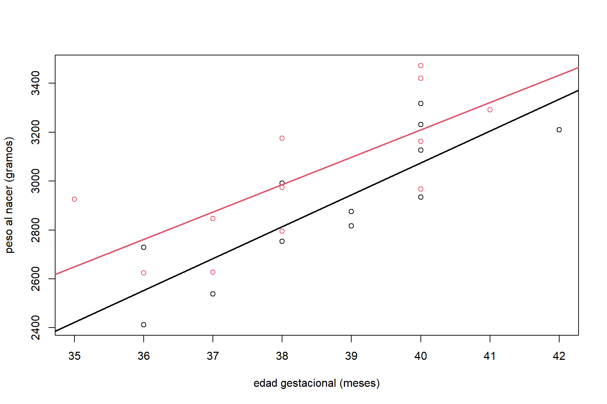
Figure 1.6: Media del peso al nacer según la edad gestacional para niños (línea roja) y niñas (línea negra). Punto rojos corresponden a niños y los negros a niñas.
Datos de grasa corporal
Vamos a considerar el siguiente modelo: \[ \mbox{brozek}_{i} = \beta_{0} + \beta_{1}\mbox{abdom}_{i} + \beta_{2}\mbox{weigth}_{i}+\beta_{3}\mbox{age}_{i} + \beta_{3}\mbox{adipos}_{i} \varepsilon_{i}, \] donde \(\varepsilon_{i}\sim N(0,\sigma^{2})\), y \(cov(\varepsilon_{j},\varepsilon_{k})=0\) para todo \(j\neq k\).
La estimación en R la realizamos de la siguiente forma:
##
## Call:
## lm(formula = brozek ~ abdom + adipos + age, data = fat)
##
## Coefficients:
## (Intercept) abdom adipos age
## -37.13370 0.63498 -0.21192 0.05996De aquí tenemos que: \[ E(\mbox{brozek} | \mbox{abdom}, \mbox{weight},\mbox{age})= -37.134+0.635\mbox{abdom}-0.212\mbox{adipos} + 0.060\mbox{age}. \] Aquí vemos que la circunferencia del abdomen y la edad tienen un efecto positivo sobre el % de grasa corporal. Sin embargo, el efecto del IMC es negativo. Específicamente, la diferencia media en el porcentaje de grasa corporal entre hombres que presentan una variación de un centímetro en la circunferencia del abdomen, manteniendo constantes el resto de las covariables (misma edad e IMC), es de 0.63%. De igual forma, la diferencia media en el porcentaje de grasa corporal entre hombres que difieren en un año de edad, con las demás covariables constantes, es de 0.060%. Por último, la diferencia para hombres que presentan una variación de una unidad en el IMC, manteniendo constantes las demás covariables, es de -0.212%. Aquí también nos podemos preguntar si los efectos de estas covariables se pueden considerar significativos. Lo que implica realizar pruebas de hipótesis.
De igual forma, podemos estimar el valor medio del % de grasa corporal para grupos poblacionales particulares. Consideremos individuos de 40 años con una circunferencia del abdomen de 99cm y un índice de masa corporal de 27. La estimación de la media se calcula de la siguiente forma:
## 1
## 22.40622La media del % de grasa corporal de los individuos con estas características es de 22.4%. Como veremos mas adelante, también podemos hacer estas estimaciones por medio de intervalos de confianza.
1.3 Inferencias sobre los parámetros del modelo
Es posible hacer inferencias (pruebas de hipótesis e intervalos de confianza) para los coeficientes de regresión \((\boldsymbol \beta)\) y el valor esperado de \(Y|\boldsymbol x\). Para que estos sean válidos, se requiere que se cumplan todos los supuestos del modelo, esto es \(\boldsymbol \varepsilon\sim N(\boldsymbol 0, \sigma^{2}\boldsymbol I_{n})\).
1.3.1 Análisis de varianza
Para probar la significancia del modelo se plantean las siguientes hipótesis:
\[\begin{equation} \begin{split} H_{0}:& \beta_{1}=\beta_{2}=\ldots=\beta_{p-1} = 0 \\ H_{1}:& \beta_{j}\neq 0 \mbox{ para al menos un }j. \end{split} \tag{1.2} \end{equation}\] El rechazo de esta hipótesis nula implica que al menos uno de los regresores \(x_1, x_2,\ldots , x_{p-1}\) contribuye significativamente al modelo.
El estadístico de prueba se encuentra a partir de la partición de la suma de cuadrados totales: \[ SST = SSR + SSE, \] donde: \[ SSR = \sum_{i=1}^{n}(\widehat{y}_{i}-\bar{y})^{2} = (\boldsymbol H\boldsymbol y- \frac{1}{n}\boldsymbol 1\boldsymbol 1'\boldsymbol y)'(\boldsymbol H\boldsymbol y- \frac{1}{n}\boldsymbol 1\boldsymbol 1'\boldsymbol y)=\boldsymbol y'(\boldsymbol H- \frac{1}{n}\boldsymbol 1\boldsymbol 1')\boldsymbol y, \] y \(\boldsymbol 1\) es un vector cuyas entradas son iguales a \(1\). Esta cantidad recibe el nombre de suma de cuadrados de la regresión (\(SSR\)).
Se tiene que, \(\frac{SSR}{\sigma^2} \sim \chi^2_{r,\lambda}\), con: \[\begin{equation} \lambda = \frac{\boldsymbol \beta^{*'}\boldsymbol X_{c}'\boldsymbol X_{c}\boldsymbol \beta^{*}}{\sigma^{2}}, \tag{1.3} \end{equation}\] donde donde \(\boldsymbol \beta^{*} = (\beta_{1},\beta_{2},\ldots,\beta_{p-1})'\) y \[ \boldsymbol X_{c} = \begin{pmatrix} x_{11} - \bar{x}_{1} & x_{12} - \bar{x}_{2} & \ldots & x_{1,p-1} - \bar{x}_{p-1} \\ x_{21} - \bar{x}_{1} & x_{22} - \bar{x}_{2} & \ldots & x_{2,p-1} - \bar{x}_{p-1} \\ \vdots & \vdots & \ddots & \vdots \\ x_{i1} - \bar{x}_{1} & x_{i2} - \bar{x}_{2} & \ldots & x_{i,p-1} - \bar{x}_{p-1} \\ \vdots & \vdots & \ddots & \vdots \\ x_{n1} - \bar{x}_{1} & x_{n2} - \bar{x}_{2} & \ldots & x_{n,p-1} - \bar{x}_{p-1} \\ \end{pmatrix}. \] De igual forma, \(\frac{SSE}{\sigma^2} \sim \chi^2_{n-p}\).
Finalmente, se puede probar que \(SSR\) y \(SSE\) son independientes.
Si \(H_{0}\) es cierta, tenemos que: \[ \frac{SSE}{\sigma^{2}}\sim\chi^{2}_{n-p} \mbox{ y } \frac{SSR}{\sigma^{2}} \sim \chi^{2}_{p-1}. \] Por lo tanto, \[ F_{0} = \frac{SSR/(p-1)}{SSE/(n-p)} =\frac{MSR}{MSE} \sim F_{p-1,n-p}, \] donde el numerado recibe el nombre de cuadrado medio de la regresión (\(MSR\)).
Si \(H_{0}\) no es cierta, tenemos que \(F_{0}\) sigue una distribución \(F\) no-central con \(p-1\) y \(n-p\) grados de libertad y parámetro de no centralidad (1.3).
Estos resultados nos indican que si el valor \(F_{0}\) es grande, entonces al menos un \(\beta_{j}\) es diferente de cero. Por lo tanto, para probar las hipótesis (1.2) calculamos el estadístico de prueba \(F_{0} = \frac{MSR}{MSE}\), y rechazamos \(H_{0}\) si \(F_{0} > F_{1-\alpha,p-1,n-p}\).
A partir de las sumas de cuadrados podemos calcular el coeficiente de determinación: \[ R^{2} = 1-\frac{SSR}{SST}, \] y cuantifica la cantidad de variabilidad de \(y\) que es explicada por el modelo. Dado que \(0 \leq SSE \leq SST\), se tiene que \(0 \leq R^{2} \leq 1\). Por lo tanto, valores cercanos a \(1\) implican que el modelo explica gran parte de la variabilidad de \(y\).
A medida que agregamos mas covariables al modelo el \(R^{2}\) aumenta (o permanece igual), sin importar si la covariable agregada tiene una contribución importante en el ajuste. Esto hace que sea difícil determinar si el incremento en el \(R^{2}\) al agregar una covariable sea relevante. Por esta razón, también podemos usar el coeficiente de determinación ajustado: \[ R^{2}_{adj} = 1-\frac{SSE/(n-p)}{SST/(n-1)} = 1 - \frac{MSE}{SS_T/(n-1)}. \] Aunque no tiene interpretación, el \(R^{2}_{adj}\) puede usarse para comparar modelos al agregar nuevas covariables. Dado que \(SS_{T}/(n-1)\) es constante, el \(R^{2}_{adj}\) solo aumentará al agregar una covariable nueva al modelo si la adición de la covariable reduce el \(MSE\).
1.3.2 Pruebas individuales sobre los coeficientes
Al rechazar \(H_{0}\) de la prueba de hipótesis (1.2) concluimos que al menos un coeficiente es diferente de cero. Por lo tanto, una o más covariables tienen un aporte significativo en el modelo. El paso que sigue es identificar estas covariables relevantes realizando pruebas de hipótesis para coeficientes individuales o sub-conjuntos de estos.
Las pruebas de hipótesis individuales sobre el \(j\)-esimo coeficiente del modelo es: \[ H_{0}: \beta_{j} = 0 \qquad H_{1}: \beta_{j} \neq 0. \] Dado que tenemos que \(\widehat{\beta}_j \sim N(\beta_j, \sigma^2 c_{jj})\), donde \(c_{jj}\) es la entrada \((j,j)\) de la matriz \(\boldsymbol C= (\boldsymbol X'\boldsymbol X)^{-1}\), entonces un estadística de prueba que podemos utilizar es: \[ t_{0} = \frac{\widehat{\beta}_{j}}{se(\widehat{\beta}_{j})} = \frac{\widehat{\beta}_{j}}{\sqrt{\widehat{\sigma}^{2} c_{jj}}}. \] Rechazamos \(H_{0}\) si \(|t_{0}| > t_{1-\alpha/2,n-p}\).
Este es una prueba parcial, puesto que estamos evaluando la significancia de \(x_{j}\) cuando las demás covariables, \((x_1,\ldots,x_{j-1},x_{j+1},\ldots,x_{p-1})\), ya están incluidas en el modelo. Por lo tanto, si no rechazamos \(H_{0}\), podemos concluir que, cuando los demás regresores están en el modelo, la covariable \(x_{j}\) no tiene un aporte significativo.
1.3.3 Prueba de hipótesis para subconjuntos de \(\boldsymbol \beta\)
Para probar la significancia de un subconjunto de coeficientes del modelo hacemos uso de la suma de cuadrados extra. Primero, consideremos el siguiente modelo de regresión: \[ \boldsymbol y= \boldsymbol X\boldsymbol \beta+ \boldsymbol \varepsilon, \] donde \(\boldsymbol X\) es una matrix \(n \times p\) y \(\boldsymbol \beta\) es el vector de coeficientes de longitud \(p\). Queremos probar si un subconjunto \(r < p\) de covariables tienen un aporte significativo en el modelo. Para esto hacemos la siguiente partición del vector \(\boldsymbol \beta\): \[ \boldsymbol \beta= \begin{pmatrix} \beta_{0} \\ \beta_{1} \\ \vdots \\ \beta_{p-r-1} \\ \hline \beta_{p-r} \\ \beta_{p-r+1} \\ \vdots \\ \beta_{p} \end{pmatrix} = \begin{pmatrix} \boldsymbol \beta_{1} \\ \hline \boldsymbol \beta_{2}\end{pmatrix}, \] donde \(\boldsymbol \beta_{1}\) y \(\boldsymbol \beta_{2}\) son vector de dimensión \((p-r)\) y \((r)\), respectivamente. Por lo tanto, queremos realizar la siguiente prueba de hipótesis: \[\begin{equation} H_{0}: \boldsymbol \beta_{2} = \boldsymbol 0\qquad H_{1}: \boldsymbol \beta_{2} \neq \boldsymbol 0. \tag{1.4} \end{equation}\] El modelo anterior se puede re-escribir de la siguiente forma: \[ \boldsymbol y= \boldsymbol X\boldsymbol \beta+ \boldsymbol \varepsilon= \boldsymbol X_{1}\boldsymbol \beta_{1}+ \boldsymbol X_{2}\boldsymbol \beta_{2} + \boldsymbol \varepsilon, \] donde \(\boldsymbol X_{1}\) es la matriz \(n\times (p-r)\) que contiene las columnas de \(\boldsymbol X\) asociadas con \(\boldsymbol \beta_{1}\), y \(\boldsymbol X_{2}\) es la matriz \(n\times r\) que contiene las columnas de \(\boldsymbol X\) asociadas con \(\boldsymbol \beta_{2}\). Este es llamado el modelo completo.
Para evaluar la contribución de los regresores asociados a \(\boldsymbol \beta_{2}\), ajustamos el modelo asumiendo que \(H_{0}\) es cierta. De esta forma tenemos el modelo reducido: \[ \boldsymbol y= \boldsymbol X_{1}\boldsymbol \beta_{1} + \boldsymbol \varepsilon. \] Para el modelo reducido tenemos que el estimador de \(\boldsymbol \beta_{1}\) es: \[ \widehat{\boldsymbol \beta}_{1} = (\boldsymbol X_{1}'\boldsymbol X_{1})^{-1}\boldsymbol X_{1}'\boldsymbol y, \] y la suma de cuadrados de la regresión es: \[ SSR(\boldsymbol \beta_{1}) = \boldsymbol y'(\boldsymbol H_1 - \frac{1}{n}\boldsymbol 1\boldsymbol 1')\boldsymbol y, \] con \(\boldsymbol H_1 = \boldsymbol X_1(\boldsymbol X_1'\boldsymbol X_1)^{-1}\boldsymbol X_1'\).
La suma de cuadrados debido a \(\boldsymbol \beta_{2}\) dado que \(\boldsymbol \beta_{1}\) ya está incluido en el modelo es: \[ SSR(\boldsymbol \beta_{2}| \boldsymbol \beta_{1}) = SSR(\boldsymbol \beta) - SSR(\boldsymbol \beta_{1}), \] recibe el nombre de suma de cuadrados extra debido a \(\boldsymbol \beta_2\) puesto que mide el incremento en la suma de cuadrados de la regresión como resultado de adicionar los regresores \(\boldsymbol X_{2}\) en el modelo que ya contiene \(\boldsymbol X_{1}\).
Se puede probar que \(SSR(\boldsymbol \beta_{2}| \boldsymbol \beta_{1})\) y \(MSE\) son independientes. Por lo tanto, podemos utilizar el siguiente estadístico de prueba: \[ F_{0} = \frac{SSR(\boldsymbol \beta_{2}|\boldsymbol \beta_{1})/r}{MSE}. \] Si \(H_{0}\) es cierta entonces \(F_{0} \sim F_{r,n-p}\). Si \(H_{0}\) no es cierta, entonces \(F_{0}\) sigue una distribución \(F\) no-central con parámetro de no centralidad igual a: \[ \lambda = \frac{1}{\sigma^{2}}\boldsymbol \beta_{2}'\boldsymbol X_{2}'\left[ \boldsymbol I_{n} - \boldsymbol X_{1}(\boldsymbol X_{1}'\boldsymbol X_{1})^{-1}\boldsymbol X_{1}'\right]\boldsymbol X_{2}\boldsymbol \beta_{2}. \] Note que si hay una relación casi colineal entre \(\boldsymbol X_{1}\) y \(\boldsymbol X_{2}\) (multicolinealidad), \(\lambda\) es cercano a cero pesar que \(\boldsymbol \beta_{2}\) sea marcadamente distinto de cero. Es decir, que la prueba tiene poca capacidad de indicar diferencias (poco poder) en presencia de multicolinealidad. Caso contrario, el máximo poder se alcanza cuando \(\boldsymbol X_{1}\) y \(\boldsymbol X_{2}\) son ortogonales (es decir \(\boldsymbol X_{2}'\boldsymbol X_{1} = \boldsymbol 0\)).
Entonces, si \(F_{0} > F_{1-\alpha,r,n-p}\) rechazamos \(H_{0}\) y concluimos que al menos un coeficiente en \(\boldsymbol \beta_{2}\) es diferente de cero. Consecuentemente, al menos una de las covariables en \(\boldsymbol X_{2}\) tiene un aporte significativo dentro del modelo.
También se pueden hacer pruebas de hipótesis a combinaciones lineales de los coeficientes de regresión. Suponga que estamos interesados en las siguientes hipótesis: \[\begin{equation} H_{0}: \boldsymbol T\boldsymbol \beta=\boldsymbol 0\qquad H_{1}: \boldsymbol T\boldsymbol \beta\neq \boldsymbol 0, \tag{1.5} \end{equation}\] donde \(\boldsymbol T\) es una matriz \(m \times p\) de constantes, tal que \(r\) de las \(m\) ecuaciones de \(\boldsymbol T\boldsymbol \beta=\boldsymbol 0\) son independientes.
El modelo completo (FM) es: \[ \boldsymbol y=\boldsymbol X\boldsymbol \beta+\boldsymbol \varepsilon, \] El estimador de \(\boldsymbol \beta\) es \(\widehat{\boldsymbol \beta}= (\boldsymbol X'\boldsymbol X)^{-1}\boldsymbol X'\boldsymbol y\), y la suma de cuadrados de los residuos es \(SSE(FM)\) (con \(n-p\) grados de libertad).
El modelo restringido (RM) se obtiene al resolver las \(r\) ecuaciones independientes de \(\boldsymbol T\boldsymbol \beta= \boldsymbol 0\) para los \(r\) coeficientes en el modelo completo en términos de los \(p-r\) coeficientes restantes. Esto lleva al siguiente RM: \[ \boldsymbol y=\boldsymbol Z\boldsymbol \gamma+\boldsymbol \varepsilon, \] donde \(\boldsymbol Z\) es una matriz \(n\times (p-r)\) y \(\boldsymbol \gamma\) es un vector de dimiensión \((p-r)\) de coeficientes de regresión. La suma de cuadrados de los residuos de este modelo es \(SS_{res}(RM)\) (con \(n-p+r\) grados de libertad).
Dado que el modelo restringido tiene menos parámetros que el modelo completo, \(SSE(RM) \geq SSE(FM)\). Para probar (1.5) usamos la diferencia entre las sumas de cuadrados de los residuos: \[ SS_{H} = SSE(RM) - SSE(FM), \] con \(r\) grados de libertad. \(SS_{H}\) es llamado la suma de cuadrados debido a \(H_{0}:\boldsymbol T\boldsymbol \beta=\boldsymbol c\). El estadístico de prueba es: \[ F_{0} = \frac{SS_{H}/r}{SSE(FM)/(n-p)} = \frac{\widehat{\beta}'\boldsymbol T[\boldsymbol T(\boldsymbol X'\boldsymbol X)\boldsymbol T']^{-1}\boldsymbol T\widehat{\boldsymbol \beta}/r}{SSE(FM)/(n-p)}. \] Rechazamos \(H_{0}\) si \(F_{0} > F_{1-\alpha,r,n-p}\).
La hipótesis anterior se puede generalizar de la siguiente forma: \[\begin{equation} H_{0}: \boldsymbol T\boldsymbol \beta=\boldsymbol c\qquad H_{1}: \boldsymbol T\boldsymbol \beta\neq \boldsymbol c, \tag{1.6} \end{equation}\] Para este caso, el estadístico de prueba es: \[ F_{0} = \frac{(\boldsymbol T\widehat{\boldsymbol \beta}-\boldsymbol c)'[\boldsymbol T(\boldsymbol X'\boldsymbol X)\boldsymbol T']^{-1}(\boldsymbol T\widehat{\boldsymbol \beta}-\boldsymbol c)/r}{SSE(FM)/(n-p)}. \] Si \(H_{0}\) es cierta, \(F_{0}\sim F_{r,n-p}\). Por lo tanto, rechazamos \(H_{0}\) si \(F_{0} > F_{1-\alpha,r,n-p}\).
1.3.4 Intervalos de confianza
1.3.4.1 Intervalos de confianza para \(\beta_{j}\)
El intervalo de confianza de \(\beta_{j}\) parte de que \(\widehat{\beta}_j \sim N(\beta_j,\sigma^2 c_{jj})\). Por lo tanto: \[ \frac{\widehat{\beta}_{j} - \beta_{j}}{\sqrt{V(\widehat{\beta}_{j})}} = \frac{\widehat{\beta}_{j} - \beta_{j}}{\sqrt{\widehat{\sigma}^2 c_{jj}}} \sim t_{n-p}, \] Entonces, el intervalo del \((1-\alpha)100\%\) de confianza para \(\widehat{\beta}_{j}\) está dado por: \[ \widehat{\beta}_{j} \pm t_{1-\alpha/2,n-p}\sqrt{\widehat{\sigma}^2 c_{jj}}. \]
1.3.4.2 Intervalos de confianza para el valor esperado de \(Y\) y una observación futura
Cuando el objetivo de ajustar un modelo de regresión es hacer predicciones, es posible hacer intervalos de confianza para la respuesta media en un punto particular \(\boldsymbol x_{0}=(1,x_{01},x_{02},\ldots,x_{0,p-1})'\) dentro del rango de los valores observado de \(\boldsymbol x\), esto es \(E(Y|\boldsymbol x_{0})=\mu_{Y|\x_{0}}\). La estimación puntual está dada por: \[ \widehat{\mu}_{Y|\boldsymbol x_0} = \boldsymbol x_{0}'\widehat{\boldsymbol \beta}. \] Además, tenemos que \(\widehat{\mu}_{Y|\boldsymbol x_0} \sim N[\boldsymbol x_{0}'\boldsymbol \beta, V(\widehat{\mu}_{Y|\boldsymbol x_0})]\) con: \[ V(\widehat{\mu}_{Y|\boldsymbol x_0}) = \sigma^{2}\boldsymbol x_{0}'(\boldsymbol X'\boldsymbol X)^{-1}\boldsymbol x_{0}. \] Por lo tanto, el intervalo del \((1-\alpha)100\%\) de confianza para \(E(Y|\boldsymbol x_{0})\) es: \[ \widehat{\mu}_{Y|\boldsymbol x_0} \pm t_{1-\alpha/2,n-p}\sqrt{\widehat{\sigma}^2 \boldsymbol x_{0}'(\boldsymbol X'\boldsymbol X)^{-1}\boldsymbol x_{0}}. \]
Ahora consideremos hacer una predicción de una observación futura de \(y\) en \(\boldsymbol x_0\) (\(y_0\)). La estimación puntual para esta observación futura es la misma que tenemos para el valor esperado, esto es: \[ \widehat{y}_0 = \boldsymbol x_{0}'\widehat{\boldsymbol \beta}. \] Para encontrar la varianza, debemos considerar que una nueva observación está determinada por: \[ \boldsymbol X_0\boldsymbol \beta+ \varepsilon_0, \] donde \(\varepsilon_0 \sim N(0,\sigma^2)\). Por lo tanto, se tiene que: \[ V(\widehat{y}_0) = \sigma^{2}\left[ 1+ \boldsymbol x_{0}'(\boldsymbol X'\boldsymbol X)^{-1}\boldsymbol x_{0}\right]. \]
Entonces, el intervalo del \((1-\alpha)100\%\) de confianza para una observación futura en \(\boldsymbol x_{0}\) es: \[ \widehat{\mu}_{Y|\boldsymbol x_0} \pm t_{1-\alpha/2,n-p}\sqrt{\widehat{\sigma}^2 \left[1+ \boldsymbol x_{0}'(\boldsymbol X'\boldsymbol X)^{-1}\boldsymbol x_{0}\right]}. \]
1.3.5 Implementación en R
Datos de peso al nacer
Los resultados generales del ajuste se pueden obtener de la siguiente forma:
##
## Call:
## lm(formula = weight ~ sex * age, data = birthweight)
##
## Residuals:
## Min 1Q Median 3Q Max
## -246.69 -138.11 -39.13 176.57 274.28
##
## Coefficients:
## Estimate Std. Error t value Pr(>|t|)
## (Intercept) -2141.67 1163.60 -1.841 0.080574 .
## sexmale 872.99 1611.33 0.542 0.593952
## age 130.40 30.00 4.347 0.000313 ***
## sexmale:age -18.42 41.76 -0.441 0.663893
## ---
## Signif. codes: 0 '***' 0.001 '**' 0.01 '*' 0.05 '.' 0.1 ' ' 1
##
## Residual standard error: 180.6 on 20 degrees of freedom
## Multiple R-squared: 0.6435, Adjusted R-squared: 0.59
## F-statistic: 12.03 on 3 and 20 DF, p-value: 0.000101Aquí podemos observar las estimaciones de los coeficientes de regresión, el error estándar asociado y los resultados pruebas de hipótesis asociado a cada uno de ellos. La estimación de la desviación estándar es \(\widehat{\sigma}=180.6\). Además, se tiene que alrededor del \(64\)% de la variabilidad del peso al nacer está siendo explicada por el modelo propuesto. Finalmente, la última linea de los resultados muestra el valor \(F_0\) y el valor-\(p\) asociado para el análisis de varianza. Dado que valor-\(p=0.000101\), podemos afirmar que al menos uno de las covariables del modelo tienen un efecto significativo sobre el peso al nacer.
A partir de la prueba de hipótesis individual sobre el efecto interacción podemos afirmar que este no es significativo (valor\(_p=0.663\)). Esto nos indica que el efecto de la edad gestacional sobre el peso al nacer es el mismo para los niños que para las niñas. También se tiene que el sexo no tiene un efecto significativo de acuerdo con la prueba de hipótesis individual. Sin embargo, no se puede afirmar que ambos efectos no sean significativos en conjunto. Para esto debemos realizar la siguiente prueba de hipótesis: \[ H_0: \beta_1 = \beta_3=0 \qquad H_1: \beta_1 \neq 0 \mbox{ o } \beta_3 \neq 0. \] En R, esto lo podemos hacer de la siguiente forma:
## Analysis of Variance Table
##
## Model 1: weight ~ age
## Model 2: weight ~ sex * age
## Res.Df RSS Df Sum of Sq F Pr(>F)
## 1 22 816074
## 2 20 652425 2 163650 2.5083 0.1067Estos resultados muestran que los datos no permiten afirmar que haya una diferencia del peso al nacer entre niños y niñas.
Asumamos ahora el modelo sin el sexo. Los intervalo del 95% de confianza para los coeficientes de regresión se obtienen de la siguiente forma:
## 2.5 % 97.5 %
## (Intercept) -3253.22239 283.2531
## age 69.69845 161.3581Por lo que la diferencia media en peso al nacer entre neonatos que nacen una semana de diferencia está entre 69.7 y 161.4 gramos, con un nivel de confianza del 95%.
La Figura 1.7 podemos ver de forma gráfica los intervalos de confianza y predicción del peso al nacer.
x.nuevo = data.frame(age=seq(from=35,to=42,length.out = 100))
pred.media = predict(mod.br0,x.nuevo,interval = 'confidence')
pred.nuevaObs = predict(mod.br0,x.nuevo,interval = 'prediction')
plot(weight~age,data=birthweight,pch=20,xlab="edad gestacional (semanas)",
ylab='peso al nacer (gramos)',ylim=c(2000,4000))
abline(mod.br0)
lines(x.nuevo$age,pred.media[,2],lty=2)
lines(x.nuevo$age,pred.media[,3],lty=2)
lines(x.nuevo$age,pred.nuevaObs[,2],lty=3)
lines(x.nuevo$age,pred.nuevaObs[,3],lty=3)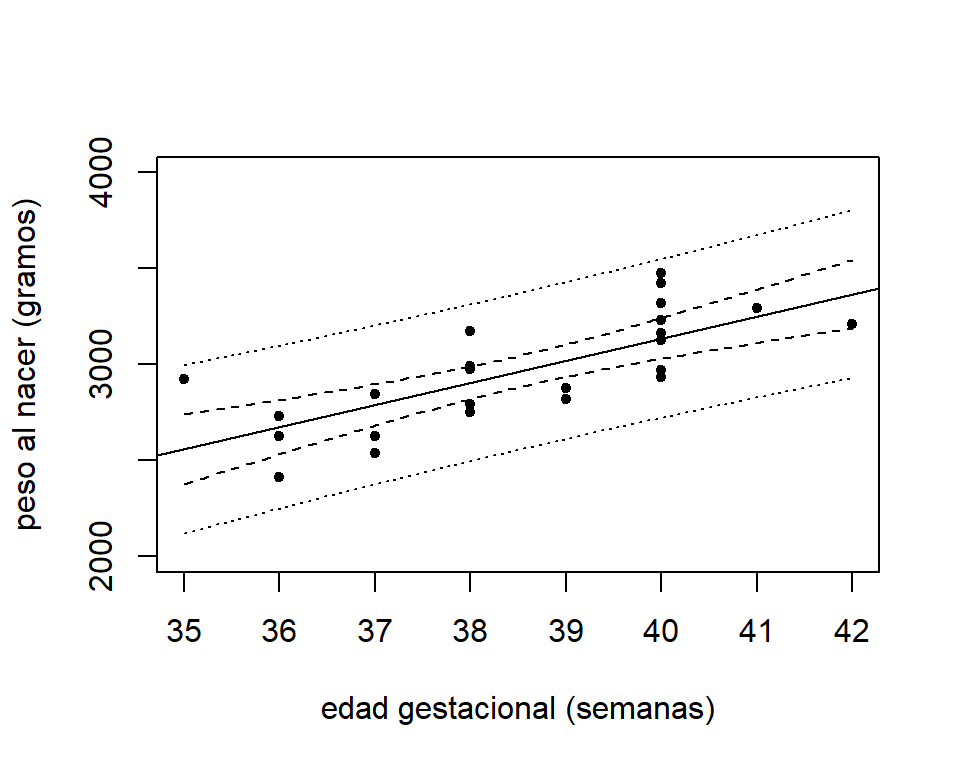
Figure 1.7: Intervalos del 95% de confianza (línea discontinua) y predicción (línea punteada) para el peso al nacer en función de la edad gestional.
Datos de grasa corporal
Volvamos a considerar individuos de 40 años con una circunferencia del abdomen de 99cm y un índice de masa corporal de 27. Pero ahora estimemos la media del porcentaje de grasa corporal por medio de un intervalo de confianza:
## fit lwr upr
## 1 22.40622 21.6498 23.16264Esto indica que los individuos con estas características tienen un valor medio de porcentaje de grasa corporal entre 21.6% y 23.16% con un nivel de confianza del 95%.
Ahora consideremos un caso de predicción. Supongamos que llega un individuo de 25 años con un índice de masa corporal de 24 y una circunferencia del abdomen de 80 y quiere saber su % de grasa corporal. El intervalo de predicción se calcula de la siguiente forma:
## fit lwr upr
## 1 10.07791 1.203722 18.95209Con un nivel de confianza del 95%, el porcentaje de grasa coporal de esta persona está entre 1.2% y 19%.
1.4 Evaluación de supuestos del modelo
En el modelo de regresión lineal múltiple lo expresamos de la siguiente forma: \[ y_{i}=\beta_{0} + \beta_{1} x_{i1}+\beta_{2} x_{i2}+\ldots + \beta_{p-1} x_{i,p-1} +\varepsilon_{i}, \] donde \(\varepsilon_i ~ N(0,\sigma^2)\) y \(cov(\varepsilon_i, \varepsilon_j)=0\) para todo \(i \neq j\). Es decir, estamos haciendo una serie de supuestos sobre la componente del error \((\boldsymbol \varepsilon)\) y debemos verificar que tan razonables son de asumir con los datos que estamos analizando. Asumimos que, para todo \(i=1,\ldots,n\): (a) \(E(\varepsilon_{i})=0\) (linealidad), (b) \(Var(\varepsilon_{i})=\sigma^{2}\) (Homogeneidad de varianza), (c) \(Cov(\varepsilon_{i},\varepsilon_{j})=0\) para todo \(i\neq j\) (incorrelación), (d) \(\varepsilon_{i} \sim\)Normal (normalidad).
La importancia de realizar procedimientos para validar los supuestos radica en que ellos inciden en las cualidades de los estimadores por MCO. En caso de no cumplirse algunos de ellos se pueden perder propiedades importantes. Si no se cumple el supuesto (a) se obtienen estimaciones sesgadas, esto es \(E(y) \neq \boldsymbol x'\boldsymbol \beta\). Si no se cumplen (b) y (c), los estimadores MCO pierden la condición de optimalidad (no aplica el teorema de Gauss-Markov) y los errores estandar de los coeficientes estimados no estarán bien calculados, \(V(\widehat{\boldsymbol \beta}) \neq \sigma^2(\boldsymbol X'\boldsymbol X)^{-1}\). Si no se cumple (d), se pierde eficiencia e imposibilita la aplicación de inferencias que están basadas en normalidad.
En general, no se puede detectar una violación a los supuestos a partir de estadísticos del ajuste del modelo (\(R^2\), \(F_0\), valores-\(t\), etc). El diagnostico se puede hacer por métodos gráficos y pruebas de bondad de ajuste (pruebas de hipótesis). Ambos métodos son complementarios.
1.5 Efectos del incumplimiento de los supuestos
1.5.1 Sesgo por omisión de variables relevantes
Si omitimos covariables relevantes dentro del modelo, las estimaciones serán sesgadas. Para ver esto, supongamos que el modelo real es: \[ \boldsymbol y= \boldsymbol X\boldsymbol \beta+ \boldsymbol \varepsilon= \boldsymbol X_{1}\boldsymbol \beta_{1} + \boldsymbol X_{2}\boldsymbol \beta_{2} + \boldsymbol \varepsilon, \] donde las columnas de la matriz \(n\times p\) de covariables \(\boldsymbol X\) está divida en dos submatrices \(\boldsymbol X_{1}\) y \(\boldsymbol X_{2}\) de dimensiones \(n \times (p-r)\) y \(n\times r\), respectivamente. Además, asumimos que \(\boldsymbol \varepsilon\sim N(\boldsymbol 0, \sigma^{2}\boldsymbol I_{n})\).
Ahora, consideramos estimar el siguiente modelo: \[ \boldsymbol y= \boldsymbol X_{1}\boldsymbol \beta_{1} + \boldsymbol \varepsilon^{*}, \] es decir estamos omitiendo las covariables contenidas en \(\boldsymbol X_{2}\). El estimador de \(\boldsymbol \beta_{1}\) es: \[ \widehat{\boldsymbol \beta}_{1} = (\boldsymbol X_{1}'\boldsymbol X_{1})^{-1}\boldsymbol X_{1}'\boldsymbol y, \] y el estimador de \(\sigma^{2}\) es: \[ \widehat{\sigma}^{2}_{1} = \frac{\boldsymbol y'(\boldsymbol I_{n} - \boldsymbol H_{1})\boldsymbol y}{n-(p-r)}, \mbox{ donde }\boldsymbol H_{1} = \boldsymbol X_{1}(\boldsymbol X_{1}'\boldsymbol X_{1})^{-1}\boldsymbol X_{1}'. \] El valor esperado de \(\widehat{\boldsymbol \beta}_{1}\) es: \[\begin{equation} \begin{split} E(\widehat{\boldsymbol \beta}_{1}) &= E\left[(\boldsymbol X_{1}'\boldsymbol X_{1})^{-1}\boldsymbol X_{1}'\boldsymbol y\right] = (\boldsymbol X_{1}'\boldsymbol X_{1})^{-1}\boldsymbol X_{1}'E(\boldsymbol y) \\ &= (\boldsymbol X_{1}'\boldsymbol X_{1})^{-1}\boldsymbol X_{1}'E(\boldsymbol X_{1}\boldsymbol \beta_{1} + \boldsymbol X_{2}\boldsymbol \beta_{2} + \boldsymbol \varepsilon) = \boldsymbol \beta_{1} + (\boldsymbol X_{1}'\boldsymbol X_{1})^{-1}\boldsymbol X_{1}'\boldsymbol X_{2}\boldsymbol \beta_{2}. \end{split} \nonumber \end{equation}\] Evidentemente, el sesgo de \(\widehat{\boldsymbol \beta}_{1}\) depende de la magnitud de \(\boldsymbol \beta_{2}\). Entre más importantes sean los efectos asociados a las covariables omitidas \((\boldsymbol \beta_{2})\), mayor será el sesgo de \(\widehat{\boldsymbol \beta}_1\). Sin embargo, en caso particular que las columnas de \(\boldsymbol X_{1}\) sean ortogonales a las columnas de \(\boldsymbol X_{2}\), tenemos que \(\boldsymbol X_{1}'\boldsymbol X_{2} = \boldsymbol 0\), por lo tanto \(\widehat{\boldsymbol \beta}_{1}\) es insesgado (así omitamos las covariables en \(\boldsymbol X_{2}\)).
El valor esperado de \(\widehat{\sigma}^{2}_{1}\) está dado por: \[ E(\widehat{\sigma}^{2}_{1}) = \sigma^{2} + \frac{\boldsymbol \beta_{2}'\boldsymbol X'_{2}(\boldsymbol I_{n} - \boldsymbol H_{1})\boldsymbol X_{2}\boldsymbol \beta_{2}}{n-(p-r)}. \] Dado que \((\boldsymbol I- \boldsymbol H_{1})\) es idempotente y, por lo tanto, positiva semi-definida, entonces \(E(\widehat{\sigma}_{1}^{2}) > \sigma^{2}\). Lo que quiere decir que \(\widehat{\sigma}^{2}_{1}\) es un estimador postivamente sesgado de \(\sigma^{2}\).
Ahora veamos el efecto sobre las predicciones de \(y\) en el punto \(\boldsymbol x_{0} = (\boldsymbol x_{01}', \boldsymbol x_{02}')'\). Tenemos que: \[ \widehat{\boldsymbol y}_{0} = \boldsymbol x_{01}'\widehat{\boldsymbol \beta}_{1} = \boldsymbol x_{01}'(\boldsymbol X_{1}'\boldsymbol X_{1})^{-1}\boldsymbol X_{1}'\boldsymbol y. \] El valor esperado de \(\widehat{\boldsymbol y}_{0}\) es: \[ E(\widehat{\boldsymbol y}_{0}) = \boldsymbol x_{01}'E(\widehat{\boldsymbol \beta}_{1}) = \boldsymbol x_{01}'\left[ \boldsymbol \beta_{1} + (\boldsymbol X_{1}'\boldsymbol X_{1})^{-1}\boldsymbol X_{1}'\boldsymbol X_{2}\boldsymbol \beta_{2} \right]. \] Por lo tanto las predicciones también son sesgadas, \(E(\widehat{\boldsymbol y}_{0}) \neq \boldsymbol x_{01}'\boldsymbol \beta_{1} + \boldsymbol x_{02}'\boldsymbol \beta_{2}\).
1.5.2 Incorrecta matriz de varianzas de los errores
Cuando \(V(\boldsymbol \varepsilon) = \sigma^{2}\boldsymbol V\), pero asumimos erroneamente que \(V(\boldsymbol \varepsilon) = \sigma^{2}\boldsymbol I_{n}\), el estimador \(\widehat{\boldsymbol \beta}\) sigue siendo insesgado. Pero, tenemos que: \[\begin{equation} \begin{split} V(\widehat{\boldsymbol \beta}) &= V\left[ (\boldsymbol X'\boldsymbol X)^{-1}\boldsymbol X'\boldsymbol y\right] = (\boldsymbol X'\boldsymbol X)^{-1}\boldsymbol X'V(\boldsymbol y)\boldsymbol X(\boldsymbol X'\boldsymbol X)^{-1} \\ &= \sigma^{2}(\boldsymbol X'\boldsymbol X)^{-1}\boldsymbol X'\boldsymbol V\boldsymbol X(\boldsymbol X'\boldsymbol X)^{-1}, \end{split} \nonumber \end{equation}\] es, generalmente, diferente de \(\sigma^{2}(\boldsymbol X'\boldsymbol X)^{-1}\) (la varianza que asumimos como cierta). Igualmente, el estimador por MCO pierde su condición de optimalidad. Es decir, deja de ser el mejor estimador lineal insesgado.
Las predicciones son insesgadas, pero: \[ V(\widehat{y}_{0}) = V(\boldsymbol x_{0}'\widehat{\boldsymbol \beta}) = \sigma^{2}\boldsymbol x_{0}'(\boldsymbol X'\boldsymbol X)^{-1}\boldsymbol X'\boldsymbol V\boldsymbol X(\boldsymbol X'\boldsymbol X)^{-1} \boldsymbol x_{0}, \] que es diferente de \(\sigma^{2}\boldsymbol x_{0}'(\boldsymbol X'\boldsymbol X)^{-1}\boldsymbol x_{0}\) (la varianza que asumimos como cierta).
Cuando \(\boldsymbol V\) es una matriz diagonal: \[ \boldsymbol V= \begin{pmatrix} v_{11} & 0 & 0 & \ldots & 0 \\ 0 & v_{22} & 0 & \ldots & 0 \\ 0 & 0 & v_{33} & \ldots & 0 \\ \vdots & \vdots & \vdots & \ddots & \vdots \\ 0 & 0 & 0 & \ldots & v_{nn} \end{pmatrix}, \] decimos que hay heterocedasticidad. Cada error tiene una varianza diferente \(V(\varepsilon_{j})=\sigma^{2}v_{jj}\), pero están incorrelacionados. Si los valores fuera de la diagonal de \(\boldsymbol V\) son diferentes de cero, entonces los errores están correlacionados.
La correlación de los errores puede esperarse en algunas situaciones. Por ejemplo, si las observaciones son tomadas en el tiempo puede presentarse correlación temporal o si las observaciones tiene un ordenamiento espacial, puede presentarse correlación espacial. En situaciones en las que se pueda garantizar que las observaciones \((y_{1},y_{2},\ldots,y_{n})\) constituyen una muestra aleatoria, no existirá correlación entre los errores, es decir, que es posible controlar este aspecto, en algunas ocasiones, controlando el procedimiento de selección de la muestra.
1.5.3 Distribución no normal de los errores
La normalidad de los errores permite la estimación por intervalos de confianza para los coeficientes de regresión, para la media condicional de \(Y\) y las nuevas observaciones. Igualmente, permite el planteamiento de pruebas de hipótesis sobre los parámetros del modelo. Cuando los errores no son normales, estas inferencias no son exactas y pueden llegar a ser inválidas.
Sin embargo, el teorema central del límite asegura que, bajo ciertas condiciones muy amplias, la inferencias basadas en el estimador de MCO son aproximadamente válidas si el tamaño de muestra es suficientemente grande. Esto significa que los niveles de las pruebas y cobertura de los intervalos de confianza son aproximadamente correctos. De la misma forma, los efectos negativos de la no normalidad dependen de que tan alejados estamos de la normalidad. Si la distribución de los errores es parecida a la normal (por ejemplo, \(t\)-Student), los efectos negativos no son considerables.
1.6 Residuos del modelo
Los residuos están definidos como \(e_{i} = y_{i}- \widehat{y}_{i}\), o de forma matricial: \[ \boldsymbol e= \boldsymbol y- \widehat{\boldsymbol y}= (\boldsymbol I- \boldsymbol H)\boldsymbol y. \] Los residuos representan las desviaciones entre las observaciones y el ajuste del modelo.
Además, estos son combinaciones lineales de los errores, \((\boldsymbol I_{n} - \boldsymbol H)(\boldsymbol X\boldsymbol \beta+\boldsymbol \varepsilon) = (\boldsymbol I_{n} - \boldsymbol H)\boldsymbol \varepsilon\). Por lo tanto toda desviación de las premisas de los errores se debe reflejar en los residuos.
Si \(\boldsymbol \varepsilon\sim N(\boldsymbol 0,\sigma^{2}\boldsymbol I_{n})\), entonces: \[ \boldsymbol e\sim N \left[ \boldsymbol 0, \sigma^{2}(\boldsymbol I_{n} - \boldsymbol H) \right]. \]
De aquí tenemos que \(V(e_{i}) = (1-h_{ii})\sigma^{2}\) y \(Cov(e_{i},e_{j}) = - h_{ij}\sigma^{2}\), para todo \(i \neq j\). Lo que indica que, aún cuando los errores sean homogéneos en varianza e incorrelacionados, no implica que los residuos lo sean también. Sin embargo, cuando \(n-p\) es grande, los residuos si reflejan a los errores en cuanto al comportamiento de su varianza y correlación. Esto se debe a que \(|h_{ij}| \leq 1\), \(\sum_{i=1}^{n}h_{ii} = n-p\), y \(\sum_{i=1}^{n}h_{ij}=\sum_{j=1}^{n}h_{ij}=1\). Por lo tanto, cuando \(n\rightarrow \infty\), \(V(e_{i}) = \sigma^{2}\) y \(Cov(e_{i},e_{j}) = 0\).
1.6.1 Residuos estudentizados
Para evitar el inconveniente de la varianza no constante de los residuos, es preferible utilizar los residuos estudentizados: \[ r_{i} = \frac{e_{i}}{\sqrt{\hat{\sigma}^{2}(1-h_{ii})}}, \qquad i=1,2,\ldots,n. \] Entonces, \(r_{i}\) tiene varianza constante (\(V(r_{i})=1\)) independiente del lugar de \(\boldsymbol x_{i}\).
1.6.2 Residuos PRESS y R-student
Los residuos estudentizados se pueden utilizar detectar puntos atípicos. El problema es que si la \(i\)-ésima observación es bastante inusual, el ajuste del modelo puede estar muy influenciado por esta. Lo que puede producir un residuo pequeño. Por esta razón, también se pueden calcular los residuos de predicción (PRESS). Estos se calculan de la siguiente forma: \[ e_{(i)} = y_{i} - \widehat{y}_{(i)}, \mbox{ para }i=1,\ldots,n, \] donde \(\widehat{y}_{(i)}\) es el valor ajustado para la \(i\)-ésima observación usando todas las observaciones excepto la \(i\)-ésima. Esto implicaría que para calcular los residuos PRESS es necesario ajustar \(n\) veces el modelo. Sin embargo, esto no es así, ya que se puede demostrar que: \[ e_{(i)} = \frac{e_{i}}{1-h_{ii}}. \] La varianza de los residuos PRESS es: \[ V(e_{(i)}) = V\left( \frac{e_{i}}{1-h_{ii}} \right) = \frac{1}{(1-h_{ii})^{2}}V(e_{i}) = \frac{1}{(1-h_{ii})^{2}} [\sigma^{2}(1-h_{ii})] = \frac{\sigma^{2}}{(1-h_{ii})}. \] Si estudentizamos los residuos PRESS obtenemos los residuos R-Student: \[ t_{i} = \frac{e_{i}}{\sqrt{\widehat{\sigma}^{2}_{(i)}(1-h_{ii})}}, \] donde \(\widehat{\sigma}^{2}_{(i)}\) es la estimación de \(\sigma\) usando todas las observaciones excepto la \(i\)-ésima. Se puede demostrar que: \[ \widehat{\sigma}^{2}_{(i)} = \frac{(n-p)\widehat{\sigma}^{2} - e^{2}_{i}/(1-h_{ii})}{n-p-1}. \]
1.7 Evaluación del cumplimiento de los supuestos
En esta sección mostramos la evaluación de los supuestos a través del análisis de los residuos del ajuste (ya sean los residuos estudentizados o los R-Student) usando gráficos y pruebas de hipótesis.
1.7.1 Gráficos de residuos
Un gráfico de los residuos es una forma efectiva de investigar posibles alejamientos de los supuestos. Generalmente, se grafican los residuos estudentizados \((r_{i})\) contra los valores ajustados \(\widehat{y}_{i}\) (o contra alguna de las covariables \(x_{ij}\)). Este tipo de gráfico es de gran ayuda para detectar la correcta especificación del modelo y homocedasticidad. Algunos patrones de residuos se pueden observar en la Figura 1.8.
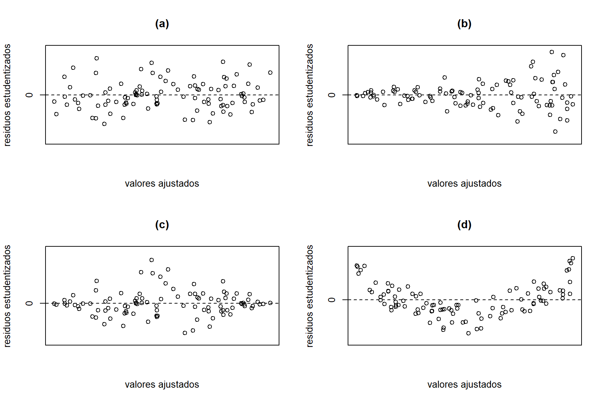
Figure 1.8: Ejemplos de posibles patrones de residuos
La Figura 1.8(a) muestra que los residuos se encuentran alrededor de cero y no se observa ningún patrón claro. Esto es un indicio que el modelo está bien especificado y hay homocedasticidad. En la Figura 1.8(b) vemos que los residuos están alrededor de cero pero la variabilidad crece a medida que los valores ajustados aumenta. Esto es un indicador de heterocedasticidad. La Figura 1.8(c) también muestra un patrón de heterocedasticidad, la variabilidad aumenta hasta cierto punto y luego decrece. En la Figura 1.8(d) observamos que los residuos no fluctuan alrededor de cero, sino que siguen una curva. Esto nos que la relación entre la variable respuesta y las covariables no es lineal.
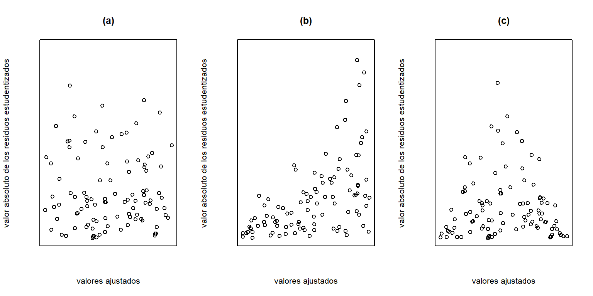
Figure 1.9: Ejemplos de posibles patrones de residuos (graficando el valor absoluto de los residuos).
Adicionalmente, para detectar más facilmente heterocedasticidad, se pueden graficar el valor absoluto de los residuos estudentizados (o al cuadrado) contra los valores ajustados (o las covariables). La Figura 1.9 muestra los mismos patrones pero graficando los residuos en valor absoluto. En las Figuras 1.9(b-c) se evidencia claramente la heterocedasticidad.
Los gráficos cuantil-cuantil (qqplot) comparan los cuantiles muestrales contra los cuantiles que se esperarían con la distribución de probabilidad asumida para los datos (cuantiles teóricos). En el caso de regresión lineal, estamos asumiendo que los errores del modelo siguen una distribución normal. Por lo tanto, debemos comparar los cuartiles muestrales de los residuos con los cuartiles teóricos que se esperarían bajo una distribución normal.
Sea \((x_{1},x_{2},\ldots,x_{n})\) una muestra aleatoría de la variable \(X\) con función de distribución desconocida \(F_{X}(x)\), y sean \((x_{[1]},x_{[2]},\ldots,x_{[n]})\) los estadísticos de orden (observaciones ordenadas de forma creciente). La función empirica de distribución es: \[ S_{n}(x_{[i]}) = \frac{i}{n} = \frac{\mbox{\# de observaciones }\leq x_{[i]}}{n}. \] Si asumimos que \(X\sim N(0,1)\), entonces los puntos \((x_{[i]},\Phi^{-1}\left\{S_{n}(x_{[i]})\right\})\), donde \(\Phi^{-1}()\) es la inversa de la función acumulativa de una normal estándar, deben seguir aproximadamente una línea recta.
La Figura 1.10 muestra diferentes patrones de gráficos de normalidad para datos generados a partir de tres distribuciones diferentes: normal estándar (derecha), exponencial con \(\lambda=1\) (centro), y \(t\)-Student con 2 grados de libertad (derecha). Aquí vemos que para los datos normales, los cuantiles muestrales y teóricos siguen aproximadamente la linea recta de referencia. Mientras que en los otros dos casos, los puntos se alejan en los extremos. En el caso de los datos exponenciales, es al lado izquierdo, mostrando que los datos presentan asímetrica. Mientras que con los datos \(t\)-Student, es a ambos lados, indicando que hay muchos valores en las colas (más de los esperados bajo normalidad).
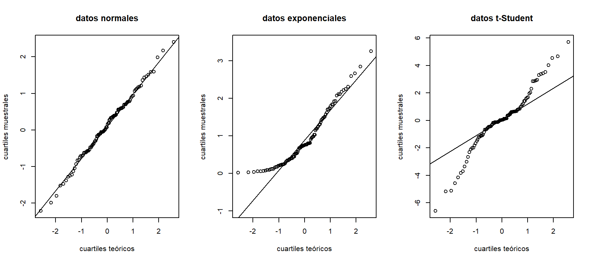
Figure 1.10: Gráficos de normalidad para datos aleatorios generados a partir de una distribución normal estándar (izquierda), exponencial (centro), y t-Student con 2 grados de libertad (derecha).
1.7.2 Pruebas de bondad de ajuste
El objetivo de las pruebas de bondad de ajuste es determinar posibles alejamientos a los supuestos asumidos en el modelo. Para cada supuesto existe una variedad de pruebas para verificarlo. Por ejemplo, para evaluar homocedasticidad podemos utlizar las pruebas de White (Breusch-Pagan) o la prueba de Goldfeld-Quandt. Para normalidad existen varias opciones, como son la prueba de Shapiro-Wilks, Shapiro-Francia, Anderson-Darling, entre otras. Para evaluar correlación es necesario tener en cuenta la estructura de los datos, por ejemplo, si los datos son tomados en el tiempo, podemos utilizar la prueba de Darwin-Watson.
Datos de grasa corporal
Para el modelo ajustado para los datos de grasa corporal, el gráfico de los residuos contra los valores ajustados se obtienen de la siguiente forma:
library(MASS)
res.stud.fat = stdres(mod.fat)
mod.fit.fat = mod.fat$fitted.values
par(mfrow=c(1,2))
plot(mod.fit.fat,res.stud.fat, ylab='residuos estudentizados',
xlab='valores ajustados',main='(a)')
abline(h=c(0,-2,2),lty=2)
lines(lowess(res.stud.fat~mod.fit.fat), col = 2)
plot(mod.fit.fat,abs(res.stud.fat),
ylab='valor absoluto de los residuos estudentizados',
xlab='valores ajustados',main='(b)')
lines(lowess(abs(res.stud.fat)~mod.fit.fat), col = 2)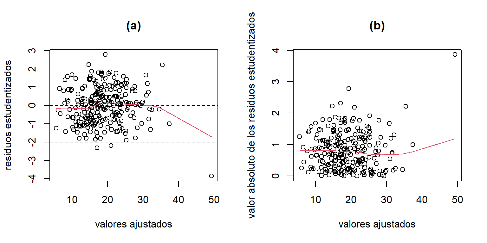
Figure 1.11: Datos de grasa corporal. Gráfico de los residuos estudentizados contra los valores ajustados.
La Figura 1.11(a) muestra que los residuos están alrededor de cero sin evidenciar ningún patrón sistemático. No obstante, se observa un dato atípico con un residuo negativo de gran magnitud. La línea roja es una suaviación LOWESS (Locally weighted scatterplot smoothing, más detalle ver Apéndice A.5 de Weisberg (2014)). Este tipo de suavización facilita la identificación de patrones; sin embargo, debe interpretarse con cautela, ya que es sensible a la presencia de valores atípicos, especialmente en los extremos del rango de los datos. Aquí vemos que la curva LOWESS permanece cercana a la línea horizontal en cero sin mostrar ninguna tendencia o curvatura marcada, salvo una perturbación atribuible a la influencia del punto atípico. Por lo tanto, podemos afirmar que la relación entre el % de grasa corporal y las covariables propuesta puede considerarse lineal. Adicionalmente, ninguno de los dos gráficos de residuos evidencia un patrón que sugiera la presencia de heterocedasticidad.
El gráfico cuartil-cuartil de los residuos estudentizados se obtiene así:
library(car)
qqPlot(mod.fat,xlab='cuantiles teóricos',ylab='residuos estudentizados',
distribution = 'norm')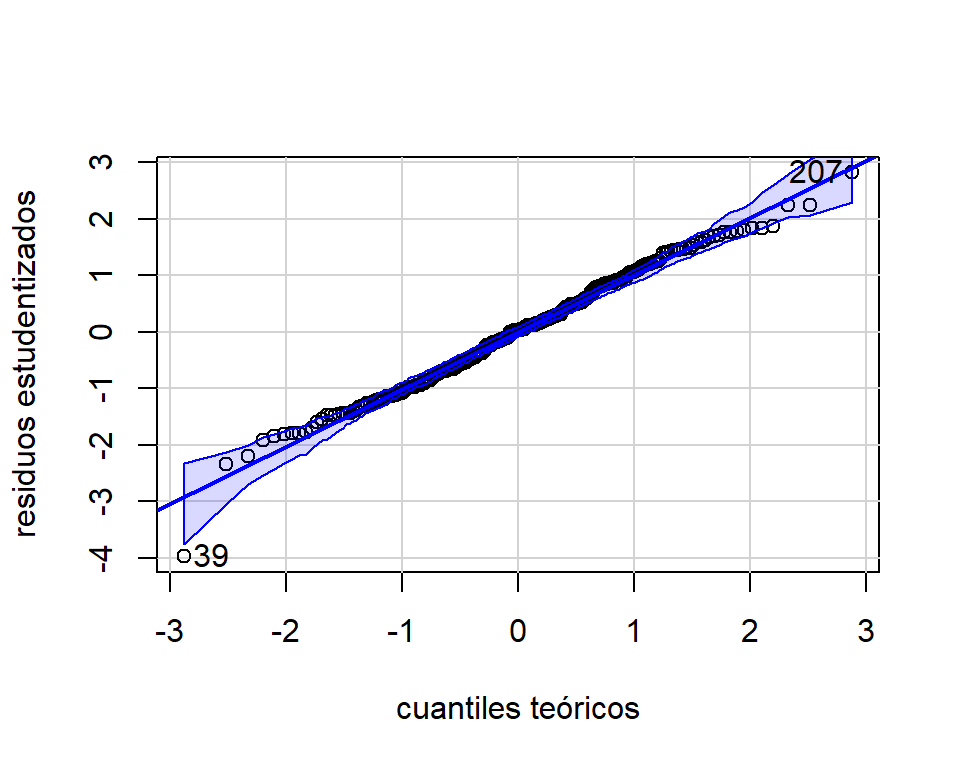
Figure 1.12: Datos de grasa corporal. Gráfico cuantil-cuantil para normalidad.
## [1] 39 207Note que la función qqPlot incluye bandas del \(95\%\) de confianza para los estadísticos de orden. Para más detalle de como se calculan, ver Sección 12.1.1 de Fox (2016). La Figura 1.12 muestra que los puntos siguen de forma aproximada una línea recta. Adicionalmente, la mayoría de los puntos están dentro de las bandas de confianza. Por lo tanto, puede considerarse que los errores siguen una distribución normal.
Datos de las Naciones Unidas
Consideremos el siguiente modelo: \[ \mbox{fertility}_{i} = \beta_{0} + \beta_{1}\mbox{ppgdp}_{i} + \beta_{2}\mbox{pctUrban}_{i} + \varepsilon_{i}, \] donde \(\varepsilon_{i}\sim N(0,\sigma^{2})\) y \(cov(\varepsilon_{j},\varepsilon_{k})=0\).
Luego de ajustar el modelo se procede a hacer un análisis de residuos. El gráfico de los residuos estudentizados (Figura 1.13a muestra que el ajuste presenta problemas de no linealidad y heterocedasticidad. Mientras que en la Figura 1.13b se evidencia falta de normalidad.
mod.UN11 = lm(fertility~ppgdp+pctUrban,data=UN11)
library(MASS)
res.UN11 = stdres(mod.UN11)
par(mfrow=c(1,2))
plot(mod.UN11$fitted.values,res.UN11,
xlab='valores ajustados',ylab='residuos estudentizados')
lines(lowess(res.UN11~mod.UN11$fitted.values),col=2)
abline(h=0,lty=2)
qqPlot(mod.UN11,xlab='cuantiles teóricos',ylab='residuos estudentizados', distribution = 'norm')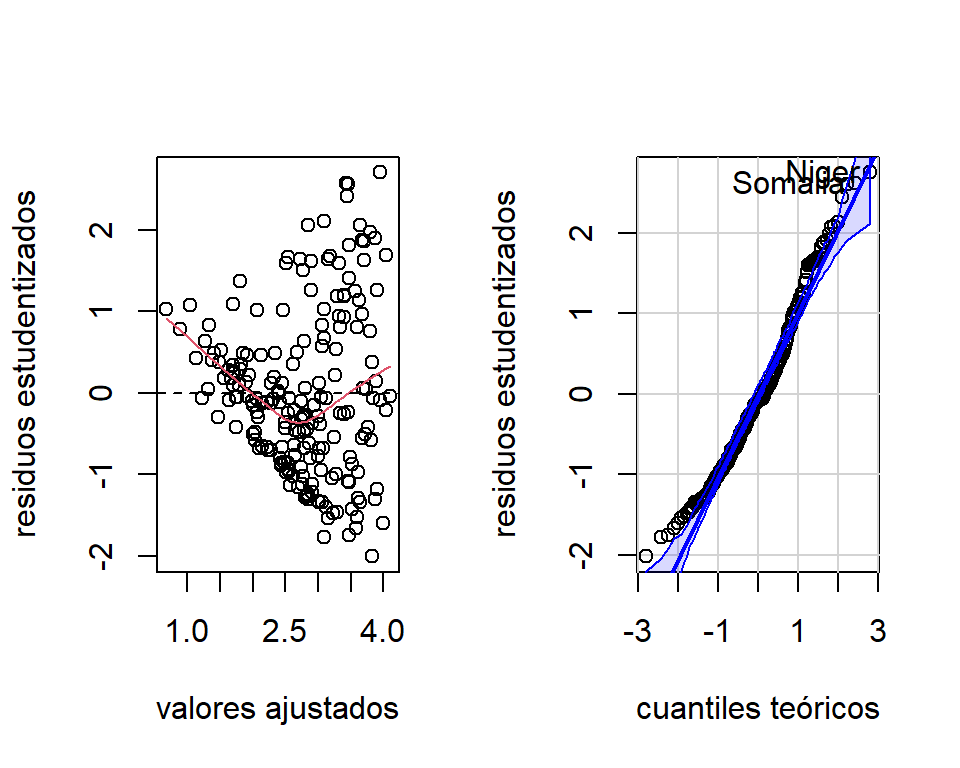
Figure 1.13: Datos de la ONU. Gráfico de los residuos estudentizados.
## Niger Somalia
## 132 165Dado que podemos notar claramente el incumplimiento de varios de los supuestos del modelo, no podemos interpretar o hacer inferencias sobre los datos por medio de este ajuste. Una forma de solucionar este problema es a través de transformaciones sobre la variable respuesta y/o las covariables.
1.7.3 Transformaciones para corregir problemas con los supuestos
Las transformaciones de la variable respuesta y/o de algunas covariables tienen como propósito linealizar la relación entre las variables, estabilizar la varianza y aproximar el cumplimiento del supuesto de normalidad de los errores. No obstante, su principal desventaja es que tanto la interpretación de los parámetros del modelo como las inferencias estadísticas se realizan sobre las variables transformadas y no sobre su escala original, lo que puede dificultar la interpretación práctica de los resultados.
Funciones linealizables
Algunas de estas funciones linealizables y su representación gráfica, se muestran en la Tabla 1.1 y Figura 1.14, respectivamente. Por ejemplo, considere que el modelo generador de los datos es: \[ y_{i} = \beta_{0}\exp\left(\beta_{1}x_{i1} \right)\varepsilon_{i}. \] Ver figura 1.14(b). Esta relación no lineal se puede linealizar aplicando una transformación logaritmica a ambos lados:
\[ \log y_{i} = y_{i}^{*} = \log \left[ \beta_{0}\exp\left(\beta_{1}x_{i} \right)\varepsilon_{i} \right] = \log \beta_{0} + \beta_{1}x_{i} + \log\varepsilon_{i}. \] Note que estaríamos asumiendo que \(\log\varepsilon_{i}\) está normalmente distribuido. Para que esto sea cierto, \(\varepsilon_{i}\) debe seguir una distribución log-normal.
| Función | Transformación | Forma lineal | |
|---|---|---|---|
| (a) | \(y = \beta_{0}x^{\beta_{1}}\) | \(y^{*}= \log(y), x^{*} = \log(x)\) | \(y^{*} = \log(\beta_{0}) + \beta_{1} x^{*}\) |
| (b) | \(y = \beta_{0}e^{\beta_{1}x}\) | \(y^{*}= \log(y)\) | \(y^{*} = \log(\beta_{0}) + \beta_{1} x\) |
| (c) | \(y = \beta_{0}+\beta_{1}ln(x)\) | \(x^{*}= \log(x)\) | \(y^{*} = \beta_{0} + \beta_{1} x^{*}\) |
| (d) | \(y = \frac{x}{\beta_{0}x+\beta_{1}}\) | \(x^{*}= \frac{1}{x}, y^{*}= \frac{1}{y}\) | \(y^{*} = \beta_{0} - \beta_{1} x^{*}\) |
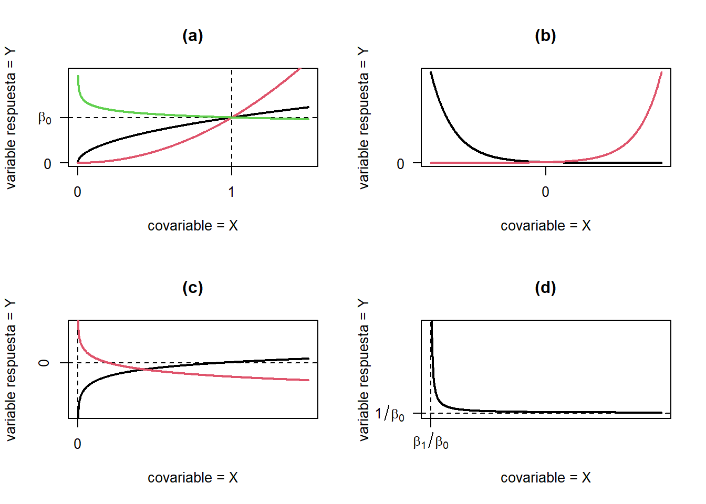
Figure 1.14: Diferentes patrones linealizables.
Transformaciones para estabilizar la varianza
Un caso frecuente es que la variable respuesta sigue una distribución de probabilidad en la que la varianza se relaciona en forma funcional con la media: \[ V(Y|X=x) = \sigma^2 g[E(Y|X=x)]. \] Por ejemplo, en la distribución Poisson, la varianza es igual a la media. Algunas transformaciones comunes para estabilizar varianza se muestran en la Tabla 1.2 (Behar 2002).
| Relación entre \(\sigma^{2}\) y \(E(Y)\) | Transformación |
|---|---|
| \(\sigma^{2} \propto C\) | \(y^{*}=y\) |
| \(\sigma^{2} \propto E(y)\) | \(y^{*}=\sqrt{y}\) |
| \(\sigma^{2} \propto E(y)[1-E(y)]\) | \(y^{*}=\sin^{-1}\sqrt{y} (0 \leq y_{i} \leq 1)\) |
| \(\sigma^{2} \propto E(y)^{2}\) | \(y^{*}=\log y\) o también \(y^{*}=\log (y+1)\) (si \(y \geq 0\)) |
| \(\sigma^{2} \propto E(y)^{3}\) | \(y^{*}=\frac{1}{\sqrt{y}}\) |
| \(\sigma^{2} \propto E(y)^{4}\) | \(y^{*}=\frac{1}{y}\) |
Algunas consideraciones cuando se hacen transformaciones sobre las variables:
- Transformaciones pueden ser sugeridas por experiencia, teoría, o métodos automáticos (como Box-Cox). En otros casos, las transformaciones se hacen de forma empírica.
- Luego de realizar las transformaciones se debe verificar si el modelo transformado cumple con los supuestos.
- Las estimaciones de la media de la variable respuesta son sobre la respuesta transformada, no en su escala original. Devolverse a la variable respuesta original no es fácil. Recordemos que: \[ E[g(y)] \neq g[E(y)]. \] En particular, las transformaciones monótonas preservan el orden de las observaciones y, por tanto, los cuantiles de la distribución. En consecuencia, los límites de un intervalo de confianza o de predicción para un cuantil pueden llevarse a la escala original mediante la transformación inversa, conservando su interpretación estadística.
1.8 Método de Box-Cox
Para la corrección del supuesto de linealidad, varianza constante y normalidad, es posible implementar transformaciones en potencia para la variable respuesta. Esto es, \(y^{*}=y^{\lambda}\). Dado que el valor de \(\lambda\) es desconocido, la idea del método de Box-Cox es estimar el modelo lineal para diferentes valores de \(\lambda\) y determinar el valor que proporciona el mejor ajuste. Sin embargo, aquí encontramos dos problemas. Primero, la transformación en potencia tiene un problema de discontinuidad en \(\lambda=0\). Puesto que cuando \(\lambda\) tiende a cero, \(y^{*}\) se acerca a \(1\). Para resolver esto, se puede utilizar \(y^{*} = (y^{\lambda}-1)/\lambda\). De esta forma, cuando \(\lambda\) tiende a cero, \(y^{*}\) se acerca a \(\log y\). Segundo, cuando \(\lambda\) cambia, los valores \(y^{*}\) varía drásticamente. Esto hace que los modelos ajustados no se puedan comparar fácilmente.
La siguuiente transformación permite que los modelos ajustados sean comparables es: \[\begin{equation} y^{(\lambda)} = \begin{cases} \frac{y^{\lambda}-1}{\lambda \dot{y}^{\lambda-1}}, & \mbox{si }\lambda \neq 0, \\ \dot{y}\log y & \mbox{si } \lambda=0, \end{cases} \tag{1.7} \end{equation}\] donde \(\dot{y} = \log \left[1/n \sum_{i=1}^{n}\log y_{i}\right]\) es la media geométrica de la variable respuesta. Entonces, el método de Box-Cox es el siguiente:
- Determinar una secuencia de valores para \(\lambda\), \((\lambda_{1},\lambda_{2},\ldots,\lambda_{K})\). Por lo general, se seleccionan valores en el intervalo \([-2,2]\).
- Ajustar el modelo: \[ y_{ij}^{(\lambda_k)} = \beta_{0} + \beta_{1}x_{i1} + \beta_{2}x_{i2} + \ldots + \beta_{p-1}x_{i,p-1} + \varepsilon_{i}, \] para cada valor de \(\lambda_{k}\), \(k=1,\ldots,K\). Al utilizar la transformación (1.7), las sumas de cuadrados para modelos con diferentes valores de \(\lambda\) son comparables.
- Seleccionar el modelo que minimiza la suma de cuadrados de los residuos, \(SS_{res}(\lambda)\). Equivalentemente, el \(\lambda\) que maximiza la verosimilitud.
- Luego de encontrar el valor de \(\lambda\) óptimo, se ajusta el modelo transformando la variable respuesta \(y^{\lambda}\), si \(\lambda\neq 0\), o \(\log y\) si \(\lambda =0\). Es decir que (@ref{eq:boxcoxtrans}) se utiliza solo en el paso de comparación de modelos ajustados.
Puesto que \(\lambda\) es una variable aleatoria, también se puede hacer una estimación por intervalos de confianza. Para esto primero consideremos la función de log-verosimilitud: \[ \ell(\boldsymbol \beta,\sigma^{2} | \lambda) = -\frac{2}{n}\log \left( 2\pi\sigma^{2}\right) - \frac{1}{2\sigma^{2}}\sum_{i=1}^{n}\left( y_{i}^{\lambda} - \boldsymbol x_{i}'\boldsymbol \beta\right)^{2} = -\frac{2}{n}\log \left( 2\pi\sigma^{2}\right) - \frac{1}{2\sigma^{2}}SS_{res}(\lambda). \] Aquí vemos que el valor de \(\lambda\) que maximiza la verosimilitud es el mismo que minimiza la suma de cuadrados de los residuos.
Un intervalo de confianza se puede construir a partir del siguiente estadístico de prueba: \[ G_{0}^{2} = -2\left[ \ell(\boldsymbol \beta,\sigma^{2} | \lambda=1) - \ell(\boldsymbol \beta,\sigma^{2} | \lambda=\widehat{\lambda}) \right]. \] Si \(\lambda=1\), entonces asintóticamente \(G_{0}^{2} \sim \chi^{2}_{1}\). Por lo tanto, el intervalo del \((1-\alpha)\times 100\)% de confianza para \(\lambda\) está definido por los valores de \(\lambda\) que cumplen con la condición: \[ \ell(\boldsymbol \beta,\sigma^{2} | \lambda) \geq \ell(\boldsymbol \beta,\sigma^{2} | \lambda=\widehat{\lambda}) - \frac{1}{2}\chi^{2}_{1,1-\alpha}. \]
Datos de las Naciones Unidas
Al realizar un análisis de residuos del ajuste del modelo para los datos de la ONU, vimos que hay una relación no-lineal entre la fertilidad y las dos covariables propuestas. Particularmente, esto se debe a la relación con la covariable producto nacional bruto.
Por lo tanto, podemos aplicar una transformación logarítmica tanto a la variable respuesta, así como la covariable producto nacional bruto. En la Figura 1.15 vemos como al aplicar esta transformación se linealiza la relación.
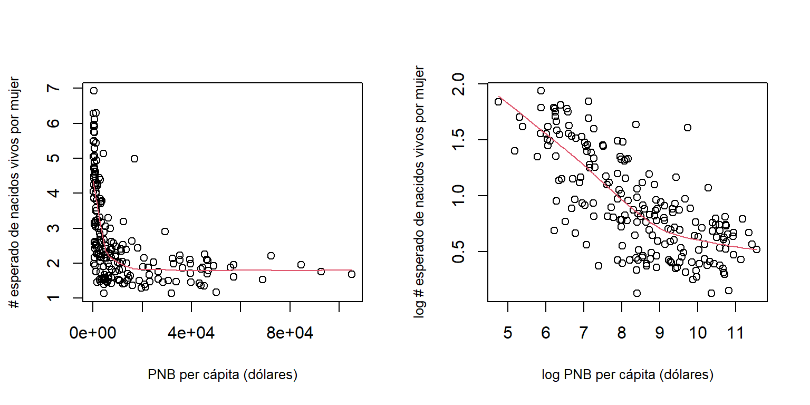
Figure 1.15: Datos de las Naciones Unidas. Relación entre las variables.
Producto de esta transformación, se propone el siguiente modelo: \[\begin{equation} \log \mbox{fertility}_{i} = \beta_{0} + \beta_{1}\log \mbox{ppgdp}_{i} + \beta_{2}\mbox{pctUrban}_{i} + \varepsilon_{i}, \tag{1.8} \end{equation}\] donde \(\varepsilon_{i}\sim N(0,\sigma^{2})\) y \(cov(\varepsilon_{j},\varepsilon_{k})=0\).
La Figura 1.16 muestra el gráfico de los residuos para este ajuste. Aquí vemos que los problemas que observamos anteriormente no se evidencian luego de realizar la transformación logarítmica.
mod.UN11.trans = lm(log(fertility)~log(ppgdp)+pctUrban,data = UN11)
res.UN11.trans = stdres(mod.UN11.trans)
par(mfrow=c(1,2))
plot(mod.UN11.trans$fitted.values,res.UN11.trans,xlab='valores ajustados',
ylab='residuos estudentizados')
lines(lowess(res.UN11.trans~mod.UN11.trans$fitted.values),col=2)
abline(h=0,lty=2)
qqPlot(mod.UN11.trans,xlab='cuantiles teóricos',ylab='residuos estudentizados',
distribution = 'norm')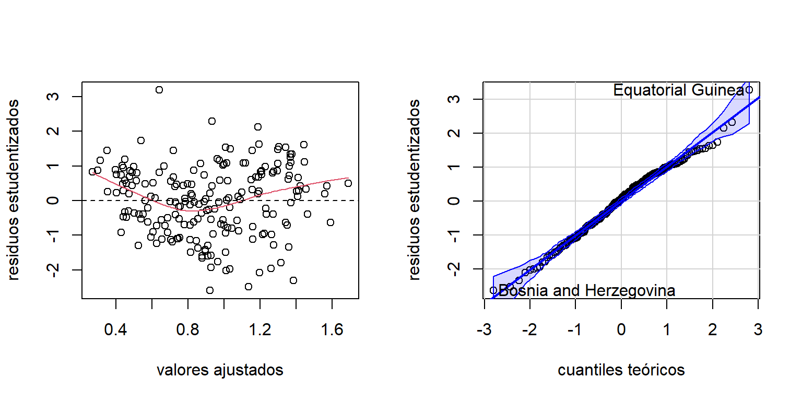
Figure 1.16: Datos de las Naciones Unidas. Gráficos de los residuos para el modelo transformado.
## Bosnia and Herzegovina Equatorial Guinea
## 23 58También podemos utilizar el método de Box-Cox para determinar una potencia para la variable respuesta. En la Figura 1.17 podemos ver que el valor óptimo para \(\lambda\) es \(-0.48\). Considerando el intervalo de confianza, se podría utilizar \(\lambda = -0.5\).
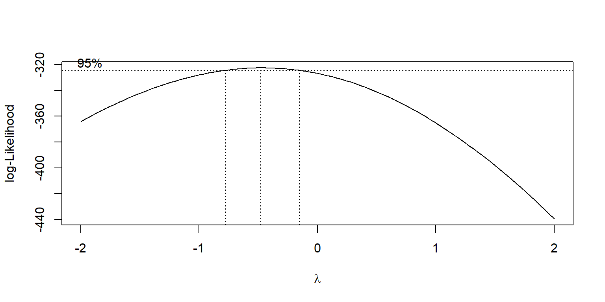
Figure 1.17: Datos de las Naciones Unidas. Obtención del valor de la potencia óptima por medio del método de Box-Cox.
## [1] -0.48Por lo que el modelo propuesto sería: \[ \log \frac{1}{\sqrt{\mbox{fertility}_{i}}} = \beta_{0} + \beta_{1}\log \mbox{ppgdp}_{i} + \beta_{2}\mbox{pctUrban}_{i} + \varepsilon_{i}, \] con \(\varepsilon_{i}\sim N(0,\sigma^{2})\) y \(cov(\varepsilon_{j},\varepsilon_{k})=0\). La Figura 1.18 muestra el gráfico de los residuos para este ajuste. Aquí vemos que los problemas que observamos anteriormente no se evidencian luego de realizar la transformación logarítmica.
mod.UN11.trans2 = lm(I(fertility^-0.5)~log(ppgdp)+pctUrban,data = UN11)
res.UN11.trans2 = stdres(mod.UN11.trans2)
par(mfrow=c(1,2))
plot(mod.UN11.trans2$fitted.values,res.UN11.trans2,xlab='valores ajustados',
ylab='residuos estudentizados')
lines(lowess(res.UN11.trans2~mod.UN11.trans2$fitted.values),col=2)
abline(h=0,lty=2)
qqPlot(mod.UN11.trans2,xlab='cuantiles teóricos',ylab='residuos estudentizados',
distribution = 'norm')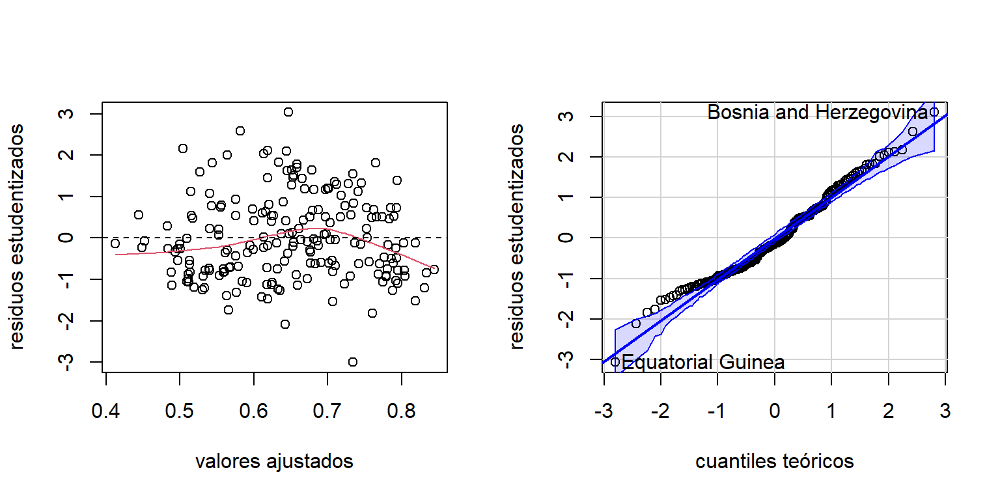
Figure 1.18: Datos de las Naciones Unidas. Gráficos de los residuos para el modelo utilizando la potencia obtenida por el método de Box-Cox.
## Bosnia and Herzegovina Equatorial Guinea
## 23 58Con esta transformación tampoco vemos que haya un patrón evidente que nos indique alejamiento a los supuestos asumidos en el modelo.
1.9 Puntos de influencia
Se tiene que \(\widehat{\boldsymbol y}= \boldsymbol H\boldsymbol y\), por lo que la estimación de la media en el punto \(\boldsymbol x_i\) está determinada como un promedio ponderado de las observaciones: \[ \widehat{y}_i = \sum_{j=1}^{n}y_{i}h_{ij} = y_{i}h_{ii} + \sum_{j\neq i}y_{j}h_{ij}, \] donde \(h_{ij} = \boldsymbol x_{i}'(\boldsymbol X'\boldsymbol X)\boldsymbol x_{j}\). Entonces, el elemento \(h_{ij}\) pueden ser visto como la cantidad de balanceo o palanqueo ejercido por \(y_j\) sobre \(\widehat{y}_i\).
Sobre los valores de la matriz \(\boldsymbol H\) se tiene que: - \(\sum_{j=1}^{n}h_{ij} = 1\), - \(h_{ii} = \bh'\bh = \sum_{i=1}^{n}h_{ij}^2 = h_{ii} + \sum_{j \neq i}^{n}h_{ij}^2\), lo que implica que \(0 \leq h_{ii} \leq 1\). Si el modelo incluye el intercepto, \(h_{ii} \leq 1/n\), - tr \(\boldsymbol H= n-p\).
Teniendo en cuenta esto, un valor de \(h_{ii}\) cercano a \(1\) implica que la \(i\)-esima observación tiene mucha influencia en la estimación de la media en ese punto \((\widehat{y}_i)\). Esto también se puede ver a través de la \(cor(y_i,\widehat{y}_i)\). Recordemos que \(V(\widehat{\boldsymbol y}) = \sigma^2\boldsymbol H\), por lo que \(V(\widehat{y}_i) = \sigma^2h_{ii}\), además: \[ cov(y_i,\widehat{y}_i) = cov\left(y_i,y_{i}h_{ii} + \sum_{j\neq i}y_{j}h_{ij}\right) = \sigma^2 h_{ii}. \] y, \[ cor(y_i,\widehat{y}_i) = \frac{\sigma^2 h_{ii}}{\sqrt{\sigma^2 \times \sigma^2 h_{ii}}} = \sqrt{h_{ii}}. \] Por lo que si \(h_{ii}\) es cercano a \(1\), \(y_i\) y \(\widehat{y}_i\) están altamente correlacionados.
En el caso de un modelo simple, tenemos que: \[ h_{ii}= \frac{1}{n} + \frac{(x_i-\bar{x})^2}{\sum_{j=1}^{n}(x_j-\bar{x})^2}, \] por lo que un punto \(x_i\) que está alejado de \(\bar{x}\) puede tener mucha influencia sobre la estimación de los coeficientes de regresión.
Para el caso del modelo lineal múltiple, se puede mostrar que (ver Seber and Lee (2003), página 70): \[ \boldsymbol H= \frac{1}{n}\boldsymbol 1\boldsymbol 1' + \boldsymbol X_{c}(\boldsymbol X_{c}'\boldsymbol X_{c})^{-1}\boldsymbol X_{c}', \] donde: \[ \boldsymbol X_{c} = \begin{pmatrix} (x_{11} - \bar{x}_1) & (x_{12} - \bar{x}_2) & \ldots & (x_{1,p-1} - \bar{x}_{p-1}) \\ (x_{21} - \bar{x}_1) & (x_{22} - \bar{x}_2) & \ldots & (x_{2,p-1} - \bar{x}_{p-1}) \\ \vdots & \vdots & \ddots \vdots \\ (x_{n1} - \bar{x}_1) & (x_{n2} - \bar{x}_2) & \ldots & (x_{n,p-1} - \bar{x}_{p-1}) \end{pmatrix}, \] donde \(\bar{x}_j = \sum_{i=1}^{n}x_{ij}\). Por lo que: \[\begin{equation} \begin{split} h_{ii} &= \frac{1}{n} + \frac{1}{n-1}(\boldsymbol x_{i} - \bar{\boldsymbol x})'\boldsymbol S_{xx}(\boldsymbol x_{i} - \bar{\boldsymbol x}) \\ &= \frac{1}{n} + \frac{1}{n-1}\mbox{MD}_{i}, \end{split} \nonumber \end{equation}\] donde \(\boldsymbol S_{xx}\) es la matriz de covarianzas muestrales de \(\boldsymbol x\), y MD\(_{i}\) es la concida como la . Es decir, \(h_{ii}\) es una medida de que tan lejos está \(\boldsymbol x_i\) del centro de los datos de las covariables, \(\bar{\boldsymbol x} = (\bar{x}_1,\bar{x}_2, \ldots, \bar{x}_{p-1})'\).
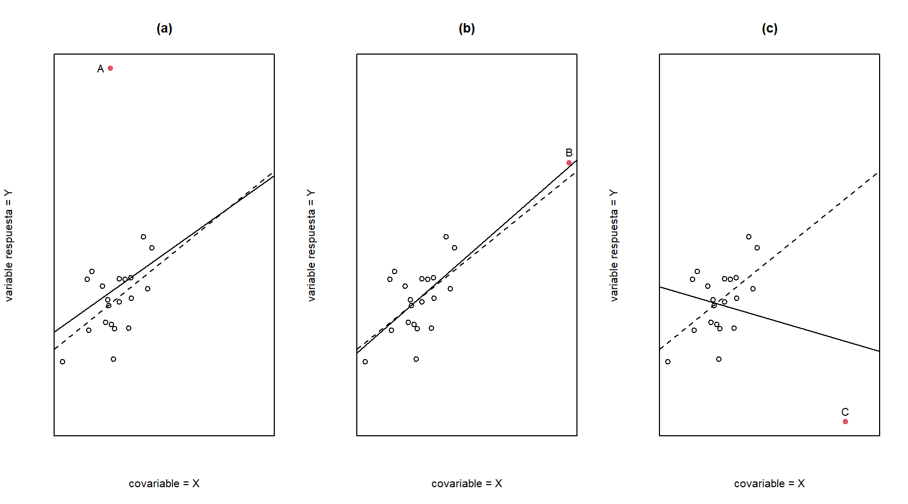
Figure 1.19: Efecto de los puntos inusuales. En cada gráfico, la línea continua es la estimación por MCO con todos los datos, mientras que la línea discontinua es la estimación por MCO omitiendo el punto inusual (circulo rojo). Izquierda: efecto de un punto atípico. Centro: efecto de un punto de balanceo. Derecha: efecto de un punto influyente.
En la Figura 1.19(a) vemos que la observación (A) tiene un valor inusual en la variable respuesta \((y)\), pero no en la covariable \((x)\), pero no tiene un efecto grande sobre la estimación de la recta de regresión. Sin embargo, puede inflar la varianza de las estimaciones y afectan las inferencias. En este caso, la estimación de la varianza con todos los datos es de \(\widehat{\sigma}^{2}=6.37\), y si se omite el dato \(A\), tenemos que \(\widehat{\sigma}^{2}=1.55\). A este tipo de observación se le llama atípica. En la Figura 1.19(b), la observación (B) es inusual en \(x\), pero no en \(y\), y tampoco tiene mucha influencia sobre las estimaciones por MCO ya que este punto está en línea con el resto de los datos. A este tipo de observación se le llama de balanceo. En contraste, en la Figura 1.19(c) vemos que el punto C afecta notablemente las estimaciones por MCO. Además, infla considerablemente la variabilidad. Con todos los datos tenemos que \(\widehat{\sigma}^{2}=3.09\). Mientras que \(\widehat{\sigma}^{2}=1.55\) al eliminar la observación C. A este tipo de observación se le conoce como influyente.
1.9.1 Distancia de Cook
Una medida de influencia está determinada en evaluar cuanto cambia la estimación de los coeficientes de regresión cuando eliminamos la \(i\)-esima observación. Estos es comparar \(\widehat{\boldsymbol \beta}\) con \(\widehat{\boldsymbol \beta}_{(i)}\) (estimación de \(\boldsymbol \beta\) cuando no se tiene en cuenta \((y_i,\boldsymbol x_i)\)).
Se puede mostrar que: \[ \widehat{\boldsymbol \beta}_{(i)} = (\boldsymbol X_{(i)}'\boldsymbol X_{(i)})^{-1} \boldsymbol X_{(i)}'\boldsymbol y_{(i)} = \widehat{\boldsymbol \beta}- \frac{e_i}{1-h_{ii}}(\boldsymbol X'\boldsymbol X)^{-1}\boldsymbol x_i, \] donde \(\boldsymbol X_{(i)} = \boldsymbol X'\boldsymbol X- \boldsymbol x_i\boldsymbol x_i'\), \(\boldsymbol y_{(i)}= \boldsymbol X'\boldsymbol y- \boldsymbol x_iy_i\) y, y \[ \left(\boldsymbol X_{(i)}'\boldsymbol X_{(i)}\right)^{-1} = (\boldsymbol X'\boldsymbol X)^{-1} + \frac{1}{1-h_{ii}} (\boldsymbol X'\boldsymbol X)^{-1}\boldsymbol x_i\boldsymbol x_i'(\boldsymbol X'\boldsymbol X)^{-1}. \] Por lo que la diferencia en la estimación de \(\boldsymbol \beta\) cuando elimino la \(i\)-eisma observación es: \[ \widehat{\boldsymbol \beta}- \widehat{\boldsymbol \beta}_{(i)} = \frac{e_i}{1-h_{ii}}(\boldsymbol X'\boldsymbol X)^{-1}\boldsymbol x_i. \] A partir de esta diferencia podemos calcular la siguiente medida llamada distancia de Cook: \[ D_{i} = \frac{(\widehat{\boldsymbol \beta}_{(i)}-\widehat{\boldsymbol \beta})'\boldsymbol X'\boldsymbol X(\widehat{\boldsymbol \beta}_{(i)}-\widehat{\boldsymbol \beta})}{p \hat{\sigma}^{2}} = \frac{r_{i}^{2}}{p}\frac{h_{ii}}{1-h_{ii}}, \]
Los puntos con grandes valores de \(D_{i}\) tienen gran influencia sobre \(\widehat{\boldsymbol \beta}\). Se considera como un punto influyente si tiene asociado un \(D_{i} > 4/n\) (algunos textos sugieren \(D_{i} > 1\)).
Otras medidas de influencia son: - DFBETAS. Evalúa la influencia de las observaciones sobre cada coeficiente de regresión. - DFFITS. Evalúa la influencia de las observacones sobre la estimación de la media de la variable respuesta. - COVRATIO. Evalúa la influencia sobre la estimación de la matriz de varianza de \(\widehat{\boldsymbol \beta}\).
1.9.2 Implementación en R
Datos de las Naciones Unidas.
Para el ajuste realizado a los datos de las Naciones Unidas. Se puede evaluar la influencia de las observaciones de la siguiente forma:
influencePlot(mod.UN11.trans, xlab='valores de la diagonal de la matriz hat',ylab='Residuos estudentizados')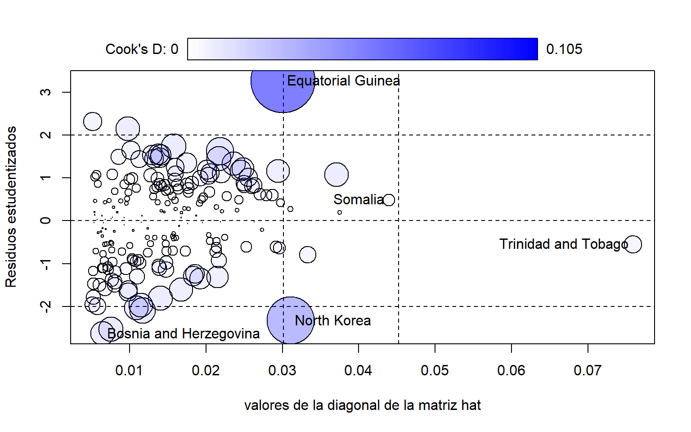
Figure 1.20: Datos de las Naciones Unidas. Gráfico de influencia.
## StudRes Hat CookD
## Bosnia and Herzegovina -2.6315523 0.006468489 0.014587800
## Equatorial Guinea 3.2653376 0.030062429 0.104982356
## North Korea -2.3302332 0.031058394 0.056735160
## Somalia 0.4897870 0.043907097 0.003686510
## Trinidad and Tobago -0.5475717 0.075904353 0.008238813En este gráfico, el tamaño y la intensidad del color de las burbujas son proporcionales a los valores de la distancia de Cook. En consecuencia, las observaciones con mayor influencia sobre las estimaciones de los coeficientes de regresión corresponden a Corea del Norte y Guinea Ecuatorial. Por otra parte, la observación correspondiente a Trinidad y Tobago presenta un valor elevado de \(h_{ii}\), pero un residuo pequeño, lo que indica que constituye una observación inusual en el espacio de las covariables, aunque no en la variable respuesta. En otras palabras, se trata de un punto de balanceo. En contraste, la observación correspondiente a Bosnia y Herzegovina presenta un residuo de gran magnitud, pero un valor de \(h_{ii}\) bajo, por lo que puede considerarse un valor atípico.
En R las medidas de influencia se pueden calcular usando la función influence.measures. Aunque también se pueden calcular cada indicador de forma independiente. La distancia de Cook puede obtenerse de la siguiente forma:
La distancia de Cook se observa en la Figura 1.21. Aquí vemos que Guinea Ecuatorial y Corea del Norte son los países que más influyen en las estimaciones de los parámetros del modelo. Lo demás países presentan valores de la distancia de Cook mucho más bajos. Como resaltamos anteriormente, Trinidad y Tobago es un punto de balanceo y no es influyente (valor de la distancia de Cook de \(0.0082\)).
OrderCD.UN11 = order(CD.UN11,decreasing = T)
plot(CD.UN11,type='h',ylab = 'distancia de Cook',xlab='índice')
text(OrderCD.UN11[1:2],CD.UN11[OrderCD.UN11[1:2]],Names[OrderCD.UN11[1:2]],pos=4,cex=0.6)
abline(h=4/199,lty=2)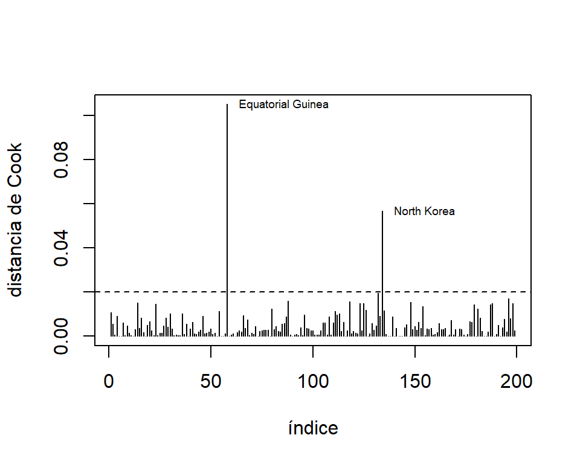
Figure 1.21: Datos de las Naciones Unidas. Distancia de Cook.
Ya identificamos que Guinea Ecuatorial y Corea del Norte son influyentes y pueden afectar considerablemente las estimaciones de los coeficientes de regresión. Pero esta influencia puede ser solamente sobre algún o algunos coeficientes de regresión. Para esto podemos calcular los DFBETAS.
La Figura 1.22 muestra los DFBETAS para los coeficientes \(\beta_{1}\) y \(\beta_{2}\). En ambos gráficos podemos ver que estos dos países son influyentes para ambos parámetros. También se pude observar que otros pocos países tienen cierta influencia en la estimación de \(\beta_{2}\), aunque los valores de los DFBETAS están muy cerca de los puntos de corte.
DFBetas.UN11 = dfbetas(mod.UN11.trans)
OrderDB1.UN11 = order(abs(DFBetas.UN11[,2]),decreasing = T)
OrderDB2.UN11 = order(abs(DFBetas.UN11[,3]),decreasing = T)
par(mfrow=c(1,2))
plot(DFBetas.UN11[,2],ylab=quote('DFBETA'~(beta[1])),xlab='índice',main='(a)')
text(OrderDB1.UN11[1:2],DFBetas.UN11[OrderDB1.UN11[1:2],2],
Names[OrderDB1.UN11[1:2]],pos=4,cex=0.6)
abline(h = c(-1,1)*2/sqrt(199),lty=2)
plot(DFBetas.UN11[,3],ylab = quote('DFBETA'~(beta[2])),xlab='índice',main='(b)')
text(OrderDB2.UN11[1:2],DFBetas.UN11[OrderDB2.UN11[1:2],3],
Names[OrderDB2.UN11[1:2]],pos=4,cex=0.6)
abline(h = c(-1,1)*2/sqrt(199),lty=2)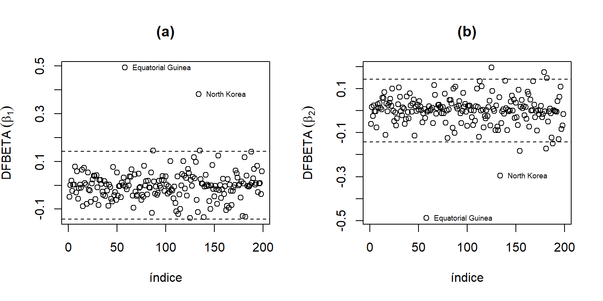
Figure 1.22: Datos de la ONU. DFBetas.
Los DFFITS y COVRATIO se observan en la Figura 1.23. A partir de los DFFITS se puede concluir que Guinea Ecuatorial y Corea del Norte también tienen gran influencia sobre las predicciones. A partir de los COVRATIO vemos que Trinidad y Tobago, Guinea Ecuatorial, Bosnia y Herzegovina, y Moldavia tienen gran influencia en la varianza de las estimaciones de los coeficientes de regresión. Note que aunque Corea del Norte fue influyente para las estimaciones, este país no influye en la varianza de estas.
DFfits.UN11 = dffits(mod.UN11.trans)
OrderDFF.UN11 = order(abs(DFfits.UN11),decreasing = T)
Covratio.UN11 = covratio(mod.UN11.trans)
OrderCR.UN11 = order(abs(1-Covratio.UN11),decreasing = T)
par(mfrow=c(1,2))
plot(DFfits.UN11,ylab='DFFITS',xlab='índice',main='(a)')
text(OrderDFF.UN11[1:2],DFfits.UN11[OrderDFF.UN11[1:2]],
Names[OrderDFF.UN11[1:2]],pos=4,cex=0.6)
abline(h = c(-1,1)*2*sqrt(3/199),lty=2)
plot(Covratio.UN11,ylab = 'COVRATIO',xlab='índice',main='(b)')
text(OrderCR.UN11[1:4],Covratio.UN11[OrderCR.UN11[1:4]],
Names[OrderCR.UN11[1:4]],pos=c(4,2,4,4),cex=0.6)
abline(h = 1+c(-1,1)*3*3/199,lty=2)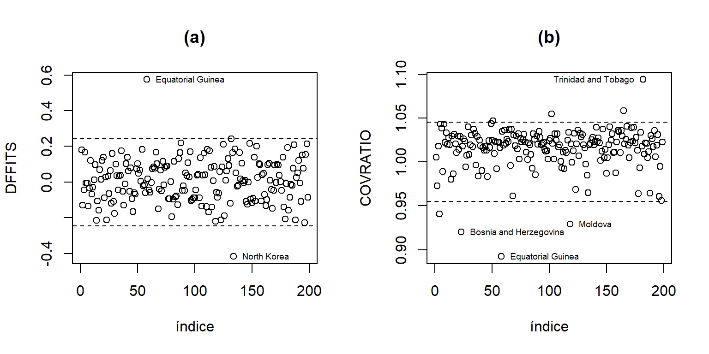
Figure 1.23: Datos de la ONU. DFFITS y COVRATIO.
A partir de estos indicadores encontramos que Guinea Ecuatorial y Corea del Norte son observaciones influyentes en la estimación del modelo (1.8). Particularmente, Guinea Ecuatorial tiene una tasa de fertilidad (4.98) muy superior a la estimada por el modelo. Esto se debe que los países con PNB y porcentaje de población urbana similares a este país tienen tasas de fertilidad más baja. Caso contrario pasa con Corea del Norte.
Para disminuir la influencia de estos países se pueden incorporar nuevas covariables dentro del modelo que ayuden a explicar estas discrepancias. Por ejemplo se podría ingresar una covariable asociada al continente.
1.10 Multicolinealidad
El estimador de \(\boldsymbol \beta\) por MCO es \(\widehat{\boldsymbol \beta}= (\boldsymbol X'\boldsymbol X)^{-1}\boldsymbol X'\boldsymbol y\). Además, se tiene que \(V(\widehat{\boldsymbol \beta}) = \sigma^{2}(\boldsymbol X'\boldsymbol X)^{-1}\). Por lo tanto, se requiere que \(\boldsymbol X\) sea de rango completo. Es decir, que no hayan columnas que sean linealmente dependientes.
Sea \(\boldsymbol x_j\) la \(j\)-ésima columna de la matriz \(\boldsymbol X\), por lo tanto \(\boldsymbol X= (\boldsymbol 1,\boldsymbol x_{1},\ldots,\boldsymbol x_{p-1})\). Los vectores \(\boldsymbol x_{1},\boldsymbol x_{2},\ldots,\boldsymbol x_{p-1}\) son linealmente dependientes si hay conjunto de constantes \(a_{1},a_{2},\ldots, a_{p-1}\) no todas igual a cero, tal que: \[ \sum_{j=1}^{p-1}a_{j}\boldsymbol x_{j} = c, \mbox{ donde }c\mbox{ es una constante.} \] Si esto se cumple, el rango de la matriz \(\boldsymbol X'\boldsymbol X\) es menor que \(p\), y por lo tanto, \((\boldsymbol X'\boldsymbol X)^{-1}\) no existe. Si la relación es aproximada \((\sum_{j=1}^{p-1}a_{j}\boldsymbol x_{j} \approx c)\), existe el problema de multicolinealidad.
Vamos a ilustrar el efecto de la multicolinealidad con un ejemplo sencillo. Consideremos un modelo lineal con dos covariables: \[ y_{i}^{*} = z_{i1}\beta_1 +z_{i2}\beta_2 +\varepsilon_i, \] donde las covariables están escaladas con longitud unitaria. Esto es: \[ y_{i}^{*} = \frac{y_{i}-\bar{y}}{\sqrt{SST}}, \mbox{ y } z_{ij} = \frac{x_{ij} - \bar{x}_{j}}{\sqrt{s_{jj}}}, \] donde \(s_{jj} = \sum_{i=1}^{n}(x_{ij}-\bar{x}_{j})^{2}\). Además, sea \(\boldsymbol Z\) la matriz de covariables. Con esta transformación, tenemos que \(\boldsymbol Z'\boldsymbol Z\) es la matriz de correlación de las covariables, \[ \boldsymbol Z'\boldsymbol Z= \begin{pmatrix} 1 & r_{12} \\ r_{12} & 1 \end{pmatrix}, \] y \(\boldsymbol Z'\boldsymbol y\) es el vector de correlaciones entre \(y\) y las dos covariables: \[ \boldsymbol Z'\boldsymbol y^{*} = \begin{pmatrix} r_{y1} \\ r_{y2} \end{pmatrix}. \] Por lo que el estimador por MCO de \(\boldsymbol b\) está dado por: \[ \widehat{\boldsymbol b}= \begin{pmatrix} 1 & r_{12} \\ r_{12} & 1 \end{pmatrix}^{-1}\begin{pmatrix} r_{y1} \\ r_{y2} \end{pmatrix} = \begin{pmatrix} \frac{1}{1-r_{12}^{2}} & \frac{-r_{12}}{1-r_{12}^{2}} \\ \frac{-r_{12}}{1-r_{12}^{2}} & \frac{1}{1-r_{12}^{2}} \end{pmatrix} \begin{pmatrix} r_{1y} \\ r_{2y} \end{pmatrix}. \] Particularmente, tenemos que: \[ \widehat{b}_{1} = \frac{r_{1y}-r_{12}r_{2y}}{1-r_{12}^{2}} \mbox{ y } \widehat{b}_{2} = \frac{r_{2y}-r_{12}r_{1y}}{1-r_{12}^{2}}. \] Además, la matriz de varianzas-covarianzas de \(\widehat{\boldsymbol b}\) es: \[\begin{equation} V(\widehat{\boldsymbol b}) = \sigma^{2} \begin{pmatrix} \frac{1}{1-r_{12}^{2}} & \frac{-r_{12}}{1-r_{12}^{2}} \\ \frac{-r_{12}}{1-r_{12}^{2}} & \frac{1}{1-r_{12}^{2}} \end{pmatrix}. \tag{1.9} \end{equation}\] En (1.9) podemos observar que la varianza de los coeficientes \(\widehat{\boldsymbol b}\) tienden a infinito cuando \(|r_{12}|\rightarrow 1\). Mientras que se hace mínima cuando las covariables están incorrelacionadas \((r_{12}=0)\). Es decir, una fuerte correlación entre \(x_1\) y \(x_2\) da como resultado grandes varianzas y covarianzas para los coeficientes \(\widehat{\boldsymbol b}\).
Para el caso de un modelo lineal múltiple, se tiene que la varianza de \(\widehat{b}_j\) es (Seber and Lee (2003), ver página 252): \[ V(\widehat{b}_j) = \sigma^{2} \frac{1}{1-R^{2}_j}, j=1,\ldots,p-1, \] donde \(R^{2}_{j}\) es el coeficiente de determinación de la regresión de \(z_{j}\) en función de las \((p-2)\) covariables restantes. Por lo que, si \(R^{2}_{j} \rightarrow 1\), entonces \(V(\widehat{b}_{j})\rightarrow \infty\).
Para los coeficientes asociados a las variables en su escala original, se tiene que: \[ V(\widehat{\beta}_j) = \frac{1}{1-R^2_{j}} \left[ \frac{\sigma^2}{\sum_{i=1}^{n} (x_{ij} - \bar{x}_j)^2} \right]. \] Cabe notar que, el problema de multicolinealidad afecta ningún supuesto sobre los errores. Por lo tanto, el estimador por MCO siguen siendo BLUE. Pero, en presencia de multicolinealidad:
Las varianzas de los coeficientes estimados \((\widehat{\beta}_{j})\) se incrementan. Lo que reduce los valores \(t\) asociados y aumentan los valores \(p\).
La estimación de los coeficientes del modelo \((\widehat{\boldsymbol \beta})\) son sensibles a las especificaciones. Estos pueden cambiar drásticamente cuando se agregan o eliminan covariables.
Sin embargo, el ajuste general del modelo, y por lo tanto las predicciones, no se verá tan afectado.
1.10.1 Factores de inflación de varianza
Dado que \(V(\widehat{\boldsymbol b}) = \sigma^2\boldsymbol R^{-1}\), los elementos de la diagonal de \(\boldsymbol R^{-1}\) son buenos indicadores de multicolinealidad: \[ VIF_j =\{\boldsymbol R^{-1}\}_{jj} = (1-R_{j}^{2})^{-1}, \] donde \(R_{j}^{2}\) es el coeficiente de determinación de ajustar un modelo de \(x_{j}\) en función de las demás covariables. Si \(x_{j}\) es casi ortogonal a las demás covariables, \(R^{2}_{j}\) es pequeño, y por lo tanto, \(\{\boldsymbol R^{-1}\}_{jj}\) cercano a \(1\). Mientras que, si \(x_{j}\) es casi linealmente dependiente a las demás covariables, entonces \(R^{2}_{j}\) es cercano a \(1\) y \(\{\boldsymbol R^{-1}\}_{jj}\) grande.
Por lo tanto, \(VIF_j\) puede ser visto como un factor de cuanto se incrementa \(V(\widehat{b}_{j})\) debido a la colinealidad entre las covariables. De aquí el nombre de factor de inflación de varianza (VIF). Generalmente, uno o mas valores grandes de VIF (\(5\) o \(10\)) es un indicador de problemas de multicolinealidad.
1.10.2 Valores propios de \(\boldsymbol Z'\boldsymbol Z\)
Dado que \(\boldsymbol R= \boldsymbol Z'\boldsymbol Z\) es una matriz simétrica y positiva semi-definida, entonces se puede descomponer de la siguiente forma: \[ \boldsymbol R= \boldsymbol T\boldsymbol \Lambda\boldsymbol T', \] donde \(\boldsymbol T= (\boldsymbol t_{1},\ldots,\boldsymbol t_{k})\) es una matriz ortogonal de vectores propios, y \(\boldsymbol \Lambda\) una matriz diagonal con los valores propios \(\lambda_{j}\), para \(j=1,\ldots,p-1\), en la diagonal principal. Por lo tanto: \[ V(\widehat{\boldsymbol \beta}) = \sigma^{2}\boldsymbol T\boldsymbol \Lambda^{-1}\boldsymbol T'. \] Entonces, \[ V(\widehat{b}_{j}) = \sigma^{2}\sum_{k=1}^{p-1}\frac{t_{jk}^{2}}{\lambda_{k}}. \] De la expresión anterior se puede ver la relación de los valores propios con el VIF: \[ VIF_{j} = \sum_{j=1}^{p-1}\frac{t_{ij}^{2}}{\lambda_{j}}, \] Por lo tanto, uno o más valores propios pequeños pueden inflar la varianza de \(\widehat{b}_{j}\). De aquí salen los indicadores llamados índices de condición y número de condición. Los índices de condición están definidos como: \[ \eta_{j} = \frac{\lambda_{\mbox{max}}}{\lambda_{j}}. \] El número de condición está definido como el máximo índice de condición. Un número de condición mayor de \(100\) es un indicador de multicolinealidad.
1.10.3 Valores singulares de \(\boldsymbol Z\)
El número de condición también se puede calcular a partir de la descomposición en valores singulares (SVD) de la matriz de covariables \(\boldsymbol Z\). Esto es: \[ \boldsymbol Z=\boldsymbol U\boldsymbol D\boldsymbol T', \] donde \(\boldsymbol U\) y \(\boldsymbol T\) son matrices \(n\times (p-1)\) y \((p-1)\times (p-1)\), respectivamente, \(\boldsymbol U\boldsymbol U= \boldsymbol I\) y \(\boldsymbol T'\boldsymbol T= \boldsymbol I\), y \(\boldsymbol D\) es una matriz diagonal con elementos \(\mu_{j}\), \(j=1,\ldots,p-1\), llamados valores singulares. Hay una relación entre los valores singulares de \(\boldsymbol Z\) y los valores propios de \(\boldsymbol Z'\boldsymbol Z\): \[ \boldsymbol Z'\boldsymbol Z= (\boldsymbol U\boldsymbol D\boldsymbol T')'\boldsymbol U\boldsymbol D\boldsymbol T' = \boldsymbol T\boldsymbol D^2\boldsymbol T' = \boldsymbol T\boldsymbol \Lambda\boldsymbol T'. \] El índice de condición de \(\boldsymbol Z\) está definido como: \[ \kappa_{j} = \frac{\mu_{\mbox{max}}}{\mu_{j}}. \] El número de condición de \(\boldsymbol Z\) está definido como el máximo \(\kappa_{j}\). Un número de condición mayor de 10, 15 o 30 es un indicador de problemas de multicolinealidad.
Note que \(\kappa_{j} = \sqrt{\eta_{j}}\). Por lo que el punto de corte de \(10\) para el número de condición de \(\boldsymbol Z\) es equivalente al número de condición de \(100\) para el número de condición de \(\boldsymbol Z'\boldsymbol Z\).
1.10.4 Solución al problema de multicolinealidad
Los problemas de multicolinealidad se pueden solucionar de las siguientes formas:
recolección de datos adicionales: si se tiene control sobre las covariables, es posible tomar más observaciones para romper con la casi dependencia en \(\boldsymbol X\). Pero esto en muchas casos es díficil por la naturaleza de las covariables. Por ejemplo, sería imposible buscar personas con circunferencia del muslo grande y pliegue cutáneo del tríceps bajo (o viceversa).
re-especificación del modelo: se pueden eliminar del modelo las covariables que me generan el problema de multicolinealidad y que pueden tener poco aporte explicativo dentro del modelo.
Uso de estimadores sesgados: Considerando que el estimador por MCO es el mejor estimador lineal insesgado de \(\boldsymbol \beta\), podemos relajar la condición de insesgamiento y buscar estimadores que aunque sean sesgados tengan menor varianza que los estimadores por MCO. Dos de estas alternativas son el estimador de ridge, el estimadores por componentes principales y el estimador de LASSO.
1.10.5 Implementación en R
Datos de cemento
Para estos datos, se propone el siguiente modelo: \[ y_{i} = \beta_{0} + x_{1i}\beta_{1} + x_{2i}\beta_{2} + x_{3i}\beta_{3} + x_{4i}\beta_{4} + \varepsilon_{i}, \] donde \(\varepsilon_{i} \sim N(0, \sigma^2)\) y \(cov(\varepsilon_{i},\varepsilon_{j})=0\) para todo \(i \neq j\). Los resultados del ajuste son:
##
## Call:
## lm(formula = y ~ x1 + x2 + x3 + x4, data = cement)
##
## Residuals:
## Min 1Q Median 3Q Max
## -3.1750 -1.6709 0.2508 1.3783 3.9254
##
## Coefficients:
## Estimate Std. Error t value Pr(>|t|)
## (Intercept) 62.4054 70.0710 0.891 0.3991
## x1 1.5511 0.7448 2.083 0.0708 .
## x2 0.5102 0.7238 0.705 0.5009
## x3 0.1019 0.7547 0.135 0.8959
## x4 -0.1441 0.7091 -0.203 0.8441
## ---
## Signif. codes: 0 '***' 0.001 '**' 0.01 '*' 0.05 '.' 0.1 ' ' 1
##
## Residual standard error: 2.446 on 8 degrees of freedom
## Multiple R-squared: 0.9824, Adjusted R-squared: 0.9736
## F-statistic: 111.5 on 4 and 8 DF, p-value: 4.756e-07Estos resultados suguieren que el ajuste es muy bueno, el 98% de la variabilidad de la cantidad de calor desprendido durante la fraguado es explicada por el modelo. Sin embargo, los resultados de las pruebas de hipótesis individuales sobre los coeficientes muestran valores \(p\) muy grandes. Estos resultados parecen contradictorios y son muy comunes en presencia de multicolinealidad.
Para evaluar el problema de multicolinealidad podemos calcular los VIF para el modelo ajustado de la siguientes forma:
## x1 x2 x3 x4
## 38.49621 254.42317 46.86839 282.51286Aquí vemos que todos los VIFs son muy altos, mostrando que hay problemas graves de multicolinealidad.
De igual forma, podemos calcular el número de condición a partir de los valores propios de la matriz de correlación de las covariables:
Xmat = model.matrix(mod.cement)[,-1]
valpropios = eigen(cor(Xmat))$values
max(valpropios)/min(valpropios)## [1] 1376.881Este valor también nos confirma que hay multicolinealidad muy notoria. Recordemos que las covariables en ese caso son la proporción de los cuatro ingredientes activos principales para la fabricación del cemento, por lo que la suma de ellos es aproximadamente igual a 1:
## 1 2 3 4 5 6 7 8 9 10 11 12 13
## 99 97 95 97 98 97 97 98 96 98 98 98 98Una posible solución a este problema es eliminar alguna de las covariables del modelo. Otra puede ser utilizar estimadores sesgados (regresión de ridge o LASSO).